سنترال برو
المحتويات: الأسئلة
- 1. البداية
- 1البرنامج ده بيعمل إيه، وهيساعدني في إيه بالظبط؟
- 2إزاي أثبّت البرنامج وأجهّز المحل لأول مرة؟
- 3إزاي أدخل البرنامج؟ ولو نسيت كلمة المرور أعمل إيه؟
- 4إزاي الشاشة الرئيسية تعرّفني حال المحل في ثانية؟
- 2. البيع والفلوس
- 5إزاي البرنامج يساعدني أبيع أسرع؟
- 6إزاي أبيع بالآجل وأتابع فلوسي عند العملاء؟
- 7إزاي البرنامج يساعدني أبيع أكتر؟
- 8عميل رجّع حاجة أو الفاتورة اتعملت غلط — أعمل إيه؟
- 9إزاي أتأكد إن فلوس الدرج مظبوطة ومحدش بياخد منها؟
- 3. المخزن
- 10إزاي أضيف صنف جديد، وكل خانة معناها إيه؟
- 11إزاي أضيف موبايلات — بأرقام IMEI ولا بالعدد؟
- 12إزاي أعدّل كمية صنف أو أعمل جرد للمحل؟
- 13إزاي أعرف الأصناف اللي قربت تخلص أو مبتتباعش؟
- 14عندي الأصناف في ملف Excel — أدخلها إزاي مرة واحدة؟
- 15إزاي أطبع ملصقات باركود وسعر؟
- 4. الصيانة
- 16إزاي أستلم موبايل صيانة من عميل؟
- 17إزاي أتابع الأجهزة اللي في الورشة؟
- 18إزاي أسلّم الجهاز؟ ولو صاحبه ما رجعش؟
- 5. الموردين والمشتريات
- 19إزاي أسجّل بضاعة اشتريتها وأعرف عليّا كام للمورد؟
- 6. التقارير والبحث
- 20إزاي أعرف كسبت كام النهارده أو الشهر ده؟
- 21إزاي ألاقي أي حاجة بسرعة؟
- 7. الإدارة والأمان
- 22إزاي أضيف موظف وأحدد هو يقدر يعمل إيه؟
- 23إزاي أعرف مين عمل إيه وإمتى؟
- 24إزاي أظبط بيانات المحل والطابعة والإيصال؟
- 25لو الجهاز اتسرق أو الهارد باظ، بياناتي هتروح؟
- 26جرّبت البرنامج بداتا تجريبية — أبدأ الشغل الحقيقي على نضيف إزاي؟
- 27الاشتراك بيشتغل إزاي، وأجدده إزاي؟
- 28سايب الجهاز شوية — أحمي البرنامج إزاي؟
- 29عندي مشكلة — أعمل إيه؟
المحتويات: دليل الشاشات والأزرار
- عام
- ش1الشريط اللي فوق والقائمة الجانبية
- ش2قائمة الحساب
- ش3حسابي
- ش4شاشة الدخول
- ش5نسيت كلمة المرور
- ش6الرئيسية
- المبيعات
- ش7نقطة البيع: الشاشة الأساسية
- ش8تعديل سطر في السلة
- ش9خصم على الفاتورة
- ش10الدفع
- ش11بعد البيع
- ش12اختيار عميل
- ش13الفواتير المعلقة
- ش14الوردية: الملخص وحركة الدرج والقفل
- ش15سجل المبيعات
- ش16تفاصيل بيع: إعادة طباعة، مرتجع، إلغاء
- ش17الورديات
- المخزن
- ش18المخزن: قائمة الأصناف
- ش19شاشة الصنف (إضافة / تعديل)
- ش20تسوية المخزون
- ش21طباعة ملصقات
- ش22استيراد من Excel
- ش23حركة المخزون
- ش24الأقسام والماركات والموديلات
- الصيانة
- ش25الصيانة: لوحة الأجهزة
- ش26استلام جهاز
- ش27تذكرة الصيانة
- ش28تسليم، دفعة، قطعة، إلغاء
- العملاء والموردين
- ش29العملاء
- ش30بيانات عميل
- ش31صفحة العميل
- ش32الموردين
- ش33صفحة المورد
- ش34فاتورة شراء
- العروض والتقارير
- ش35العروض الذكية
- ش36التقارير
- الإعدادات
- ش37الإعدادات: بيانات المحل
- ش38الضرائب، الفواتير والإيصالات
- ش39نقطة البيع
- ش40المخزن والصيانة
- ش41العروض ونقاط الولاء
- ش42الطابعات ورموز QR
- ش43المستخدمين
- ش44الأدوار والصلاحيات
- ش45الأمان وسجل النشاط
- ش46النسخ الاحتياطي
- ش47الترخيص وهذا الجهاز
البداية
تثبيت البرنامج، الدخول، والشاشة الرئيسية
س: البرنامج ده بيعمل إيه، وهيساعدني في إيه بالظبط؟
سنترال برو بيمسك المحل كله في مكان واحد، ومن غير إنترنت:
| بيساعدك في | إزاي |
|---|---|
| البيع بسرعة | بالباركود أو البحث، إيصال في ثانية، ودفع كاش أو فيزا أو محفظة أو آجل. |
| فلوس الدرج | بيحسب اللي المفروض يكون في الدرج، ويطلّعلك أي عجز أو زيادة آخر اليوم. |
| المخزن | الكمية بتنقص لوحدها مع البيع، وبينبهك على اللي قرب يخلص واللي راكد. |
| الصيانة | كل جهاز بتذكرة: استلام، متابعة، قطع غيار، تسليم، وضمان. |
| العملاء والموردين | مين عليه فلوس، ولمين عليك فلوس، بالمليم. |
| زيادة البيع | عروض واقتراحات ذكية للكاشير («اسكرينة مع الجراب بخصم»). |
| المكسب | تقارير المبيعات والربح والمخزن لأي فترة، وتصدير Excel و PDF. |
| الأمان | صلاحيات لكل موظف، سجل بكل عملية، ونسخ احتياطي مشفّر. |
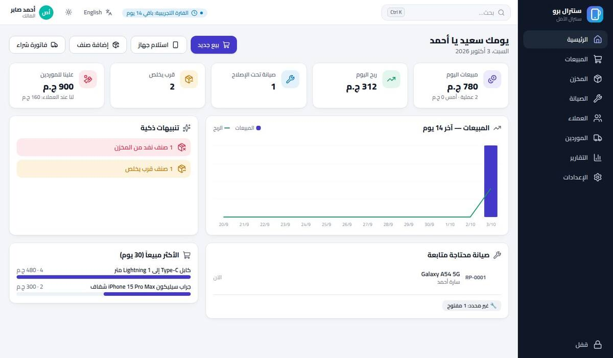
س: إزاي أثبّت البرنامج وأجهّز المحل لأول مرة؟
بتاخد دقيقتين:
- شغّل ملف Central-Pro-Setup.exe. لو ويندوز طلّع رسالة زرقا: More info ← Run anyway.
- افتح Central Pro من سطح المكتب، واضغط ابدأ.
- اختار اللغة، واكتب بيانات المحل (بتظهر على الإيصال)، والعملة.
- اعمل حساب صاحب المحل: الاسم واسم المستخدم وكلمة المرور ورقم سري سريع (PIN).
- الطابعة (أو «تخطي» وظبطها بعدين)، والأقسام الجاهزة، وبعدين دخول.
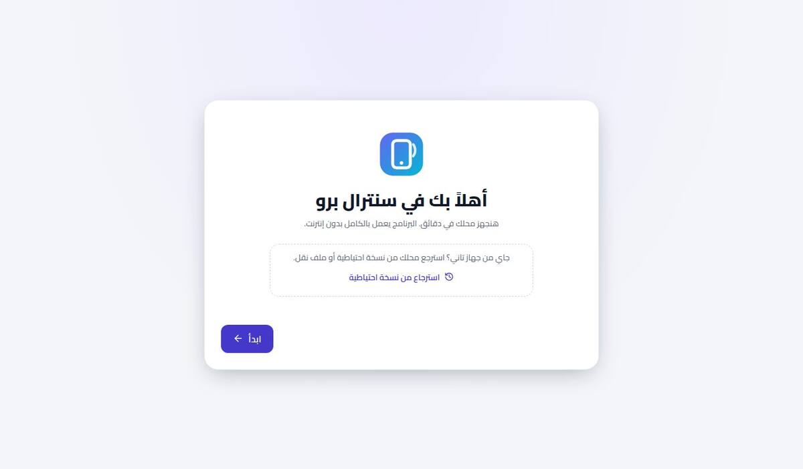
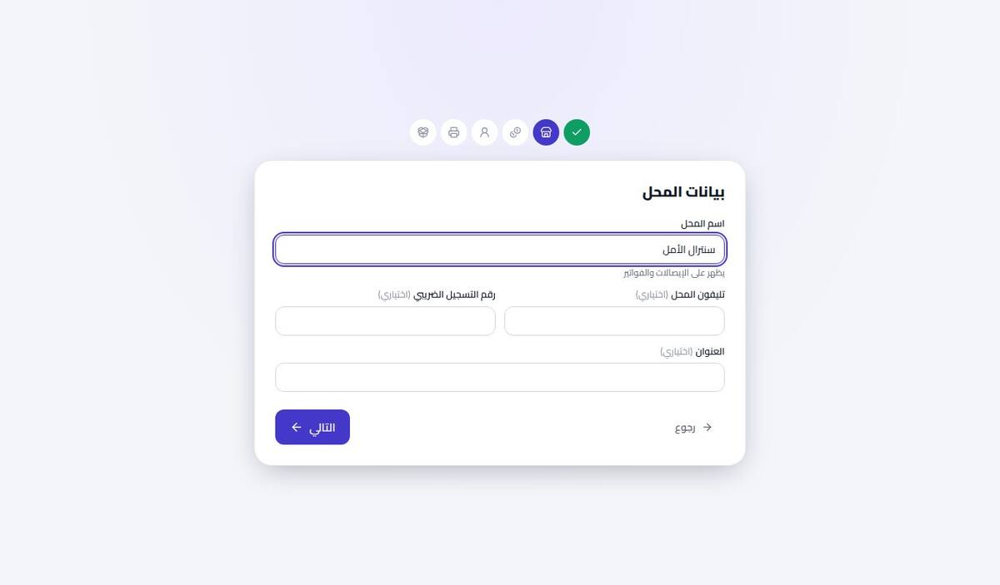
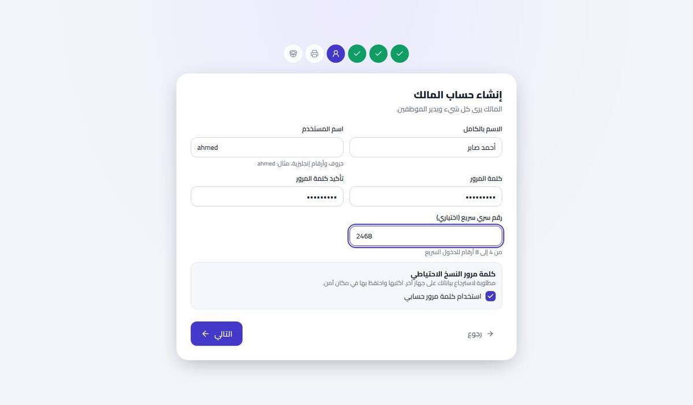
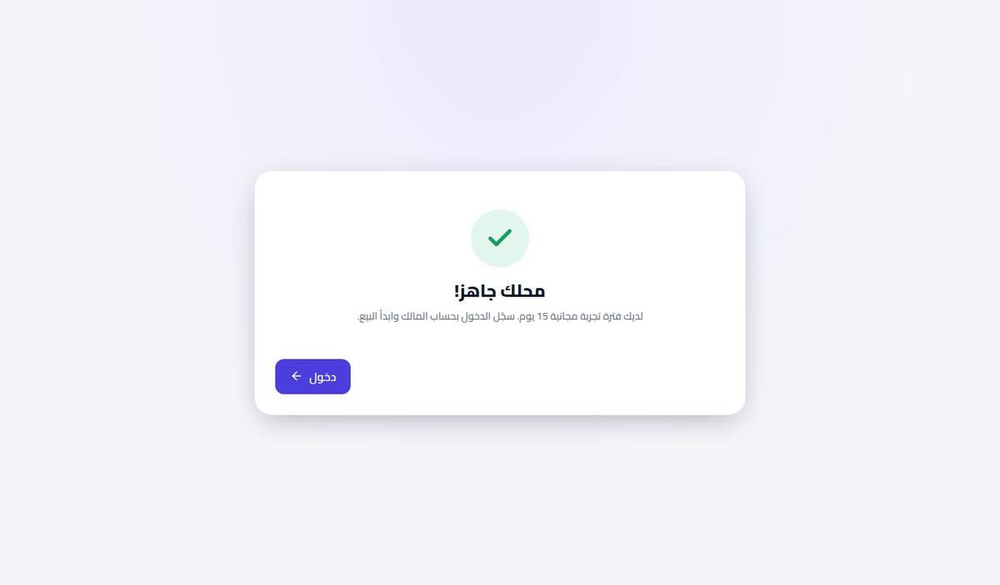
س: إزاي أدخل البرنامج؟ ولو نسيت كلمة المرور أعمل إيه؟
اختار اسمك واكتب الـ PIN على الأزرار، أو ادخل بكلمة المرور.
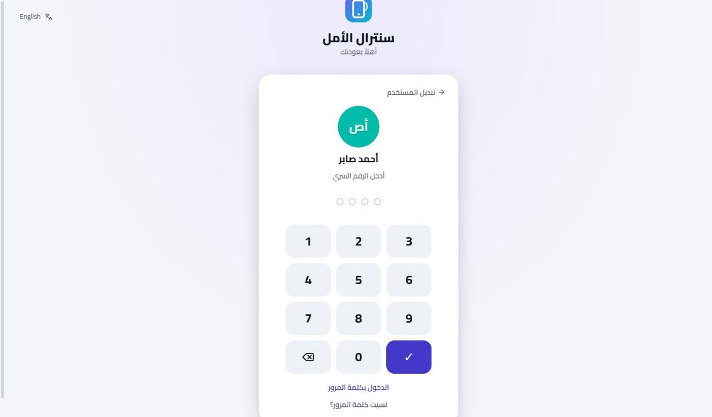
نسيت كلمة المرور؟
- لو إنت موظف: صاحب المحل يغيّرهالك من الإعدادات ← المستخدمين. ولو ليك PIN، ادخل بيه.
- لو إنت صاحب المحل: اضغط «نسيت كلمة المرور؟» ← ابعت كود الاستعادة للمورد ← هيبعتلك مفتاح استعادة ← الصقه واختار كلمة مرور جديدة.
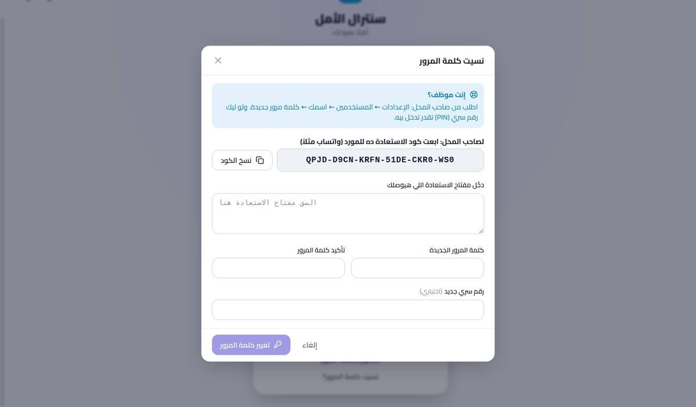
س: إزاي الشاشة الرئيسية تعرّفني حال المحل في ثانية؟
أول ما تدخل بتشوف:
- مبيعات وربح النهارده ومقارنة بامبارح.
- أجهزة تحت الإصلاح، والأصناف اللي قربت تخلص، وفلوسك عند العملاء وعليك للموردين.
- رسم آخر 14 يوم، والأكتر مبيعاً، والصيانة المحتاجة متابعة.
- تنبيهات ذكية: اضغط على أي تنبيه يفتحلك القائمة على طول، زي الأصناف اللي نفدت بس.
البيع والفلوس
الكاشير، الآجل، المرتجع، والدرج
س: إزاي البرنامج يساعدني أبيع أسرع؟
- افتح المبيعات، وأول مرة في اليوم افتح الوردية واكتب الفكة.
- امسح الباركود، أو اكتب جزء من الاسم، أو اضغط على القسم.
- زوّد الكمية بـ +، واضغط دفع (F8).
- اختار كاش أو فيزا أو محفظة، واضغط إتمام البيع (F10). البرنامج بيحسب الباقي ويطبع الإيصال.
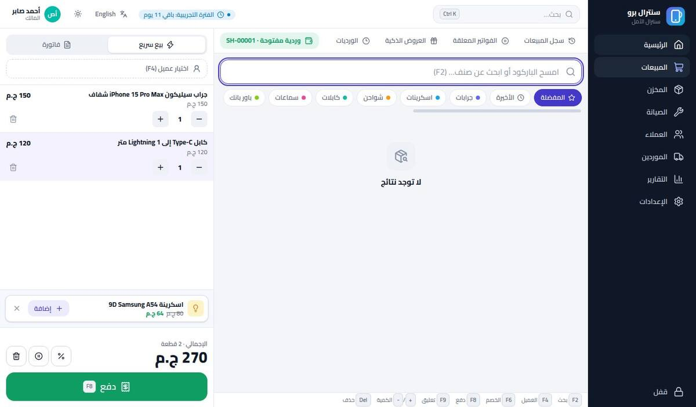
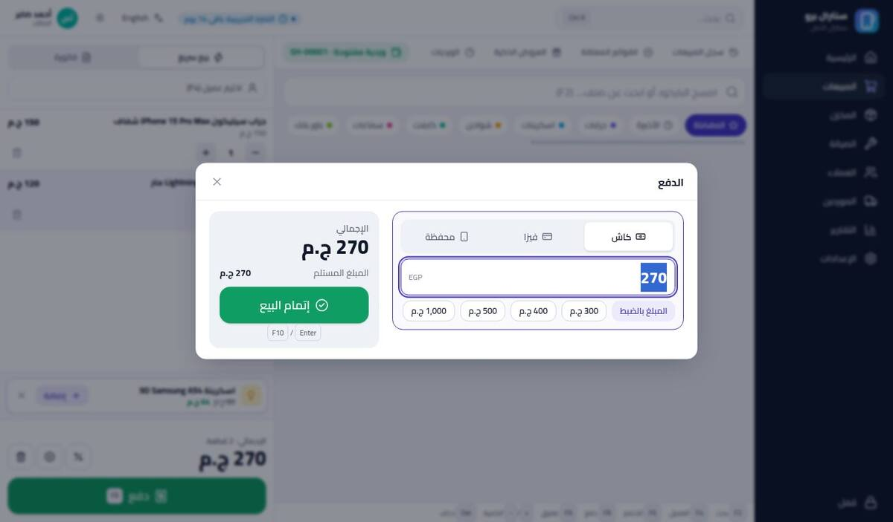
| المفتاح | الوظيفة |
|---|---|
| F2 | البحث / الباركود |
| F4 | اختيار عميل |
| F6 | خصم |
| F8 / F10 | الدفع / إتمام البيع |
| F9 | تعليق الفاتورة وخدمة عميل تاني |
| Ctrl + K | بحث في البرنامج كله |
س: إزاي أبيع بالآجل وأتابع فلوسي عند العملاء؟
- في البيع اضغط اختيار عميل (F4)، أو اعمل عميل جديد بالاسم والموبايل.
- في الدفع اكتب المبلغ اللي دفعه بس، والباقي بيتسجل عليه آجل.
- لما يجي يدفع: افتح العميل ← تحصيل ← البرنامج كاتب اللي عليه.
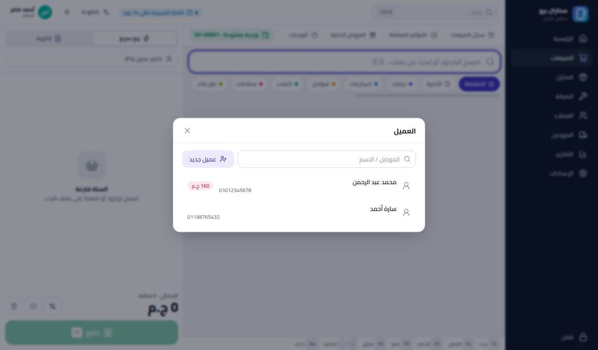
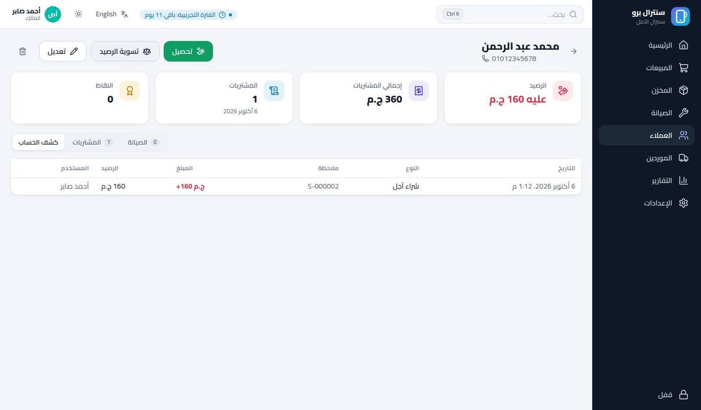
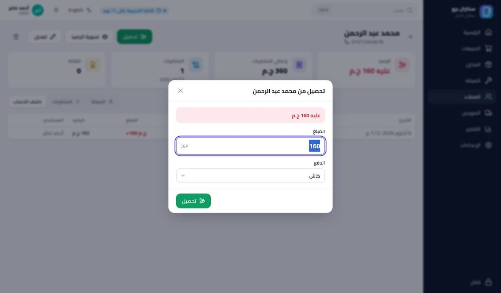
- حد الآجل: لكل عميل حد، والبرنامج بيوقّف الآجل لو عدّاه.
- في العملاء فلتر «عليهم فلوس» بيجيبلك المديونين بس.
س: إزاي البرنامج يساعدني أبيع أكتر؟
من العروض بتعمل عروض، والكاشير بيشوف الاقتراح وهو بيبيع:
- اقتراح إضافي: اشترى جراب، اقترح اسكرينة بخصم.
- سعر باقة، خصم كمية، اشتري X وخد Y، تصفية للراكد، وخصم على الفاتورة فوق مبلغ معين.
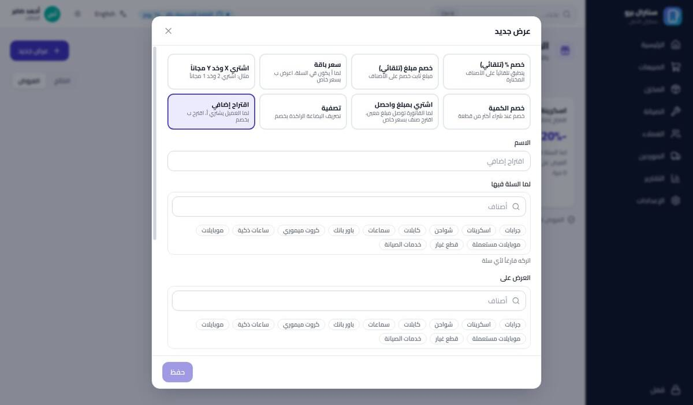
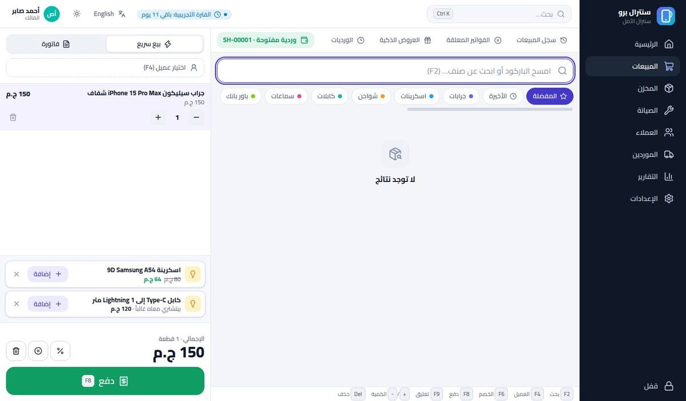
س: عميل رجّع حاجة أو الفاتورة اتعملت غلط — أعمل إيه؟
- سجل المبيعات ← افتح الفاتورة (ابحث برقمها أو موبايل العميل).
- مرتجع: اختار الكمية اللي راجعة، والبرنامج يرجّعها المخزن ويطلّع فلوسها من الدرج.
- الفاتورة غلط ومفيهاش مرتجع؟ إلغاء العملية.
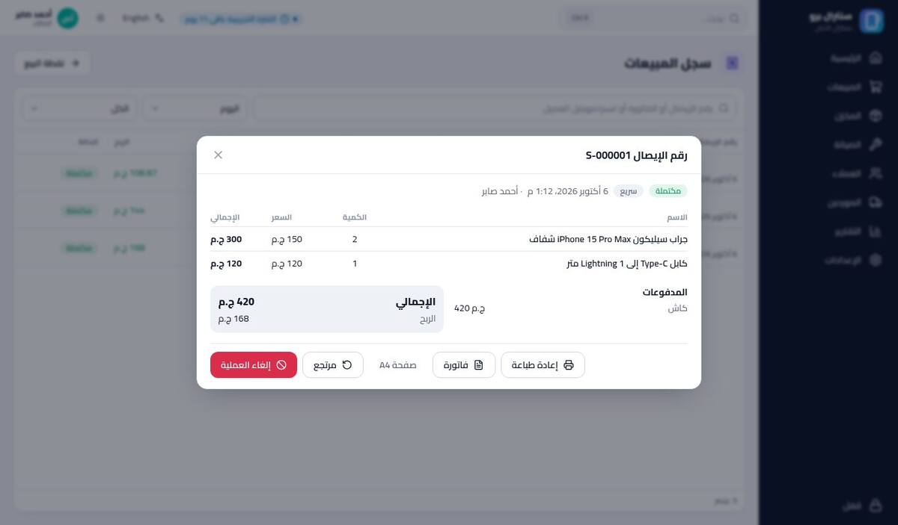
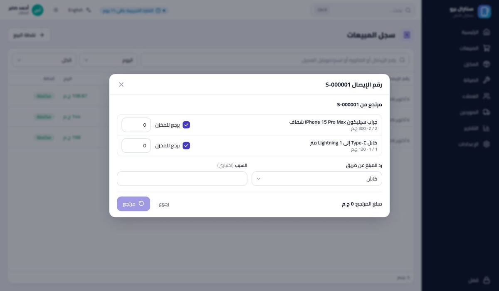
س: إزاي أتأكد إن فلوس الدرج مظبوطة ومحدش بياخد منها؟
البرنامج بيحسب المفروض يكون في الدرج: الفكة، والبيع الكاش، والتحصيلات، والعربون، ناقص المصروفات والمرتجعات ومدفوعات الموردين.
- أي مصروف (شاي، مواصلات) سجّله سحب / مصروف في الوردية.
- آخر اليوم: قفل الوردية ← عدّ الفلوس واكتبها ← البرنامج يقولك عجز ولا زيادة.
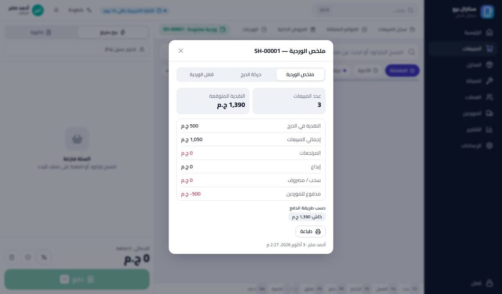
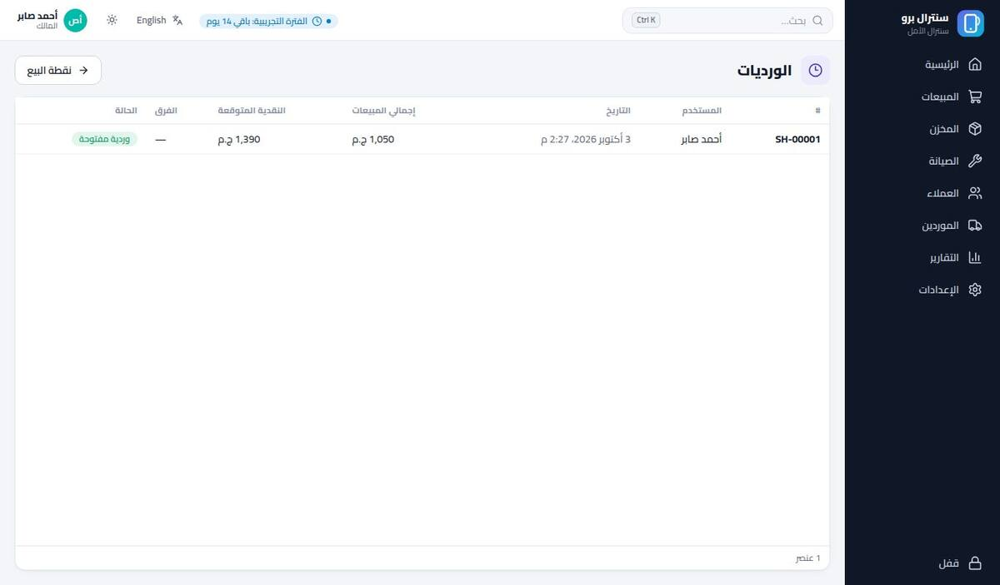
المخزن
الأصناف، الموبايلات، الجرد، والنواقص
س: إزاي أضيف صنف جديد، وكل خانة معناها إيه؟
المخزن ← صنف جديد ← اختار النوع ← املا الخانات ← حفظ. تحت كل خانة مش واضحة فيه شرح صغير.
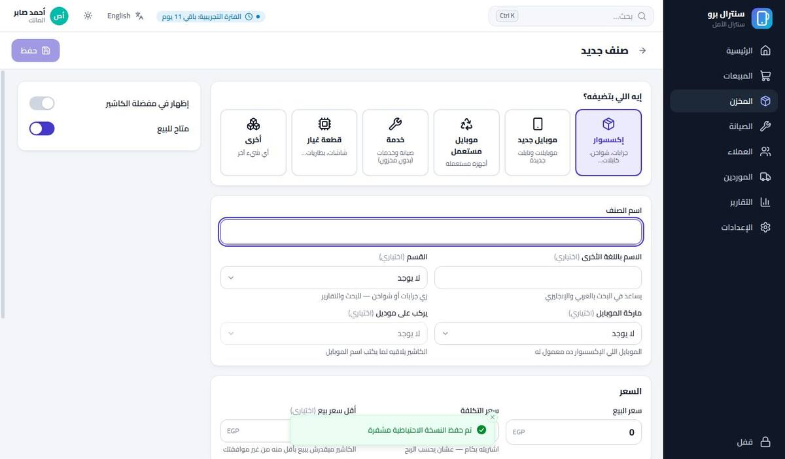
| الخانة | معناها |
|---|---|
| إيه اللي بتضيفه؟ | إكسسوار، موبايل جديد أو مستعمل، خدمة (من غير مخزون)، قطعة غيار. |
| اسم الصنف | الاسم اللي على الإيصال. |
| الاسم باللغة الأخرى | عشان يطلع لو كتبت «جراب» أو «Case». |
| القسم | زي جرابات أو شواحن، للبحث والتقارير. |
| ماركة الموبايل / يركب على موديل | للإكسسوار: الموبايل اللي بيركب عليه، فالكاشير يلاقيه لما يكتب اسم الموبايل. |
| سعر البيع / التكلفة | للعميل / إنت اشتريته بكام (عشان الربح). |
| أقل سعر بيع | الكاشير ميقدرش ينزل تحته من غير موافقتك. |
| الكمية اللي عندك دلوقتي | العدد اللي في المحل حالاً. |
| تنبيه عند أقل من | لما توصل للرقم ده يظهر في «قرب يخلص». |
| الباركود | امسح اللي على العلبة، أو «توليد» واطبعه ملصق. |
| صورة المنتج (اختياري) | «اختار صورة» من الجهاز أو «صوّر بالكاميرا». بتظهر على الصنف في شاشة البيع وفي قايمة المخزن، فالكاشير يعرفه من شكله. |
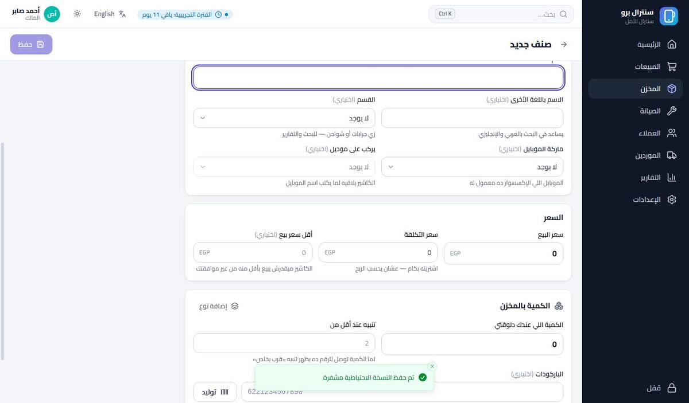
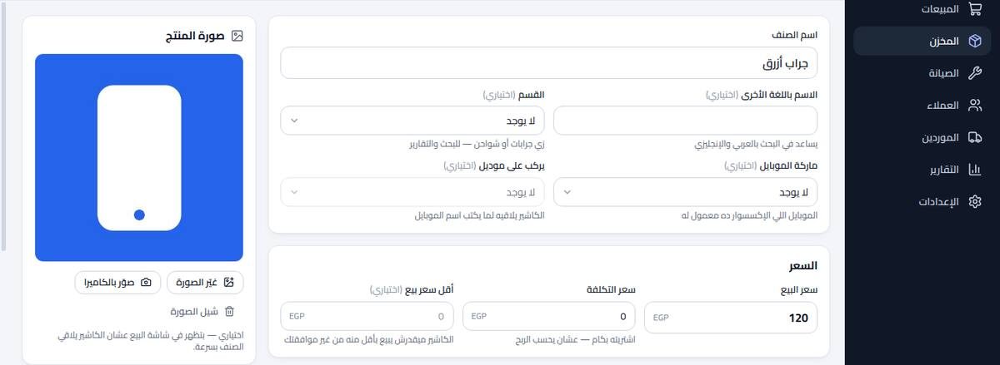
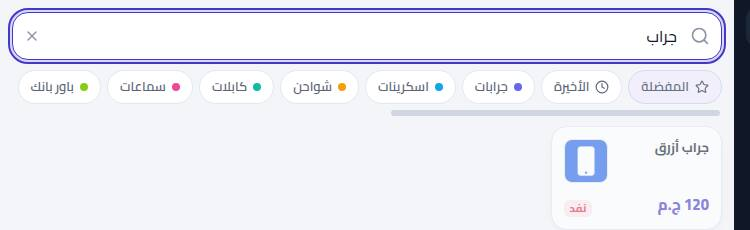
س: إزاي أضيف موبايلات — بأرقام IMEI ولا بالعدد؟
في الموبايل الجديد أو المستعمل، خانة «تعدّ الأجهزة دي بـ» فيها اختيارين:
- رقم IMEI لكل جهاز: اكتب أو امسح رقم كل جهاز في سطر، وعدد الأرقام هو الكمية. كل جهاز بيبقى ليه تاريخه للضمان والمرتجع.
- العدد بس: اكتب الكمية زي أي صنف.
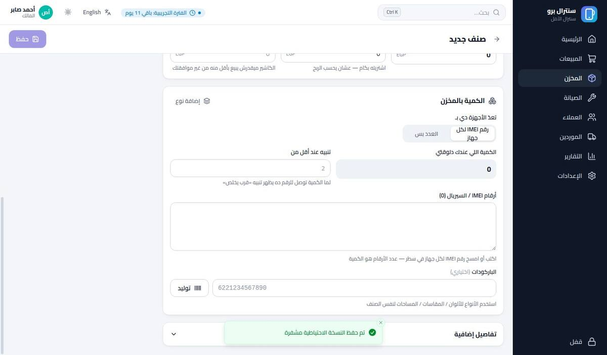
س: إزاي أعدّل كمية صنف أو أعمل جرد للمحل؟
- صنف واحد: افتح الصنف ← تعديل الكمية جنب الكمية ← اكتب العدد الحقيقي ← حفظ.
- جرد أو تالف أو مفقود لكذا صنف: المخزن ← تسوية المخزون ← اختار السبب والأصناف.
- كل تغيير بيتسجل في حركة المخزون بالسبب واسم الموظف.
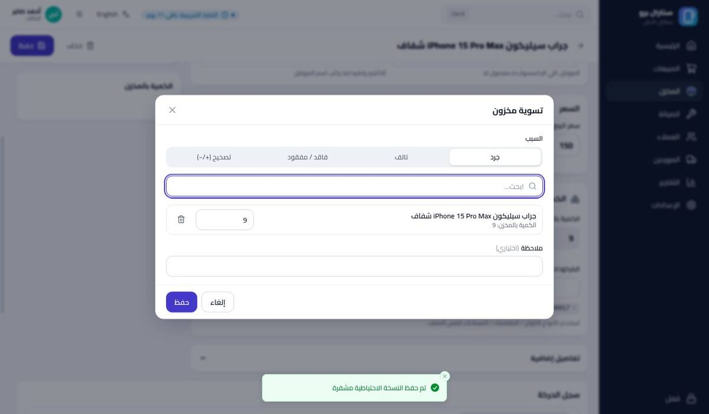
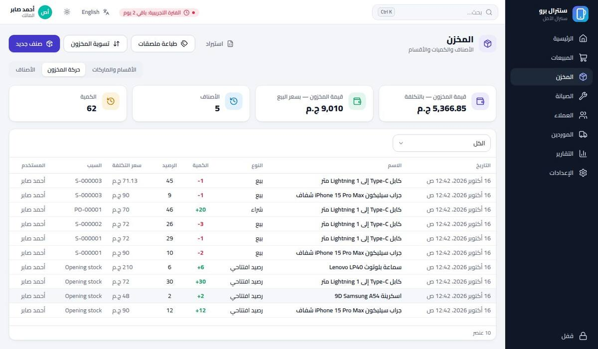
س: إزاي أعرف الأصناف اللي قربت تخلص أو مبتتباعش؟
- في المخزن الفلاتر: كمية قليلة، نفد، راكد.
- الرئيسية بتنبهك، واضغط على التنبيه يفتح القائمة.
- التقارير ← المخزن: قيمة البضاعة، والسريع والبطيء في البيع.
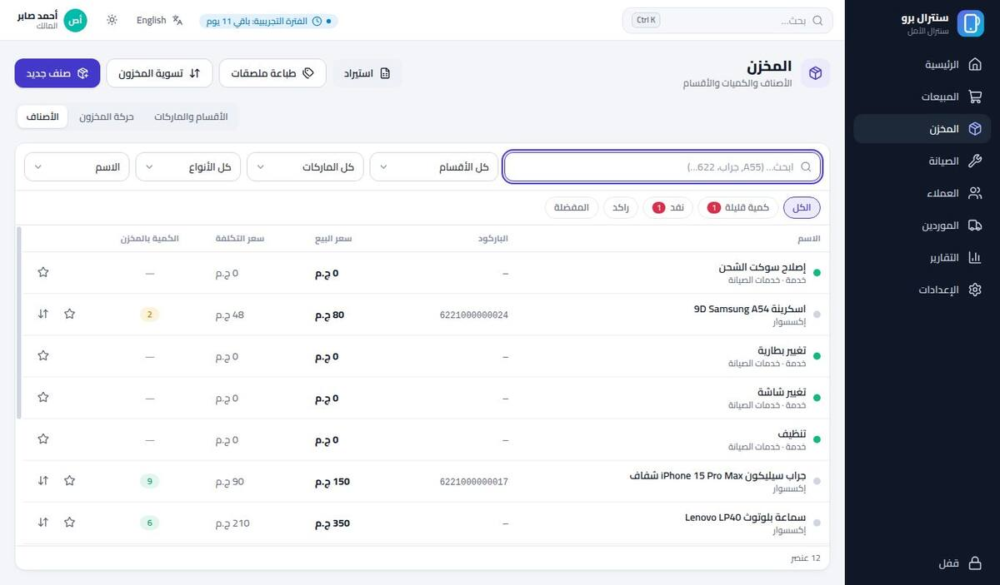
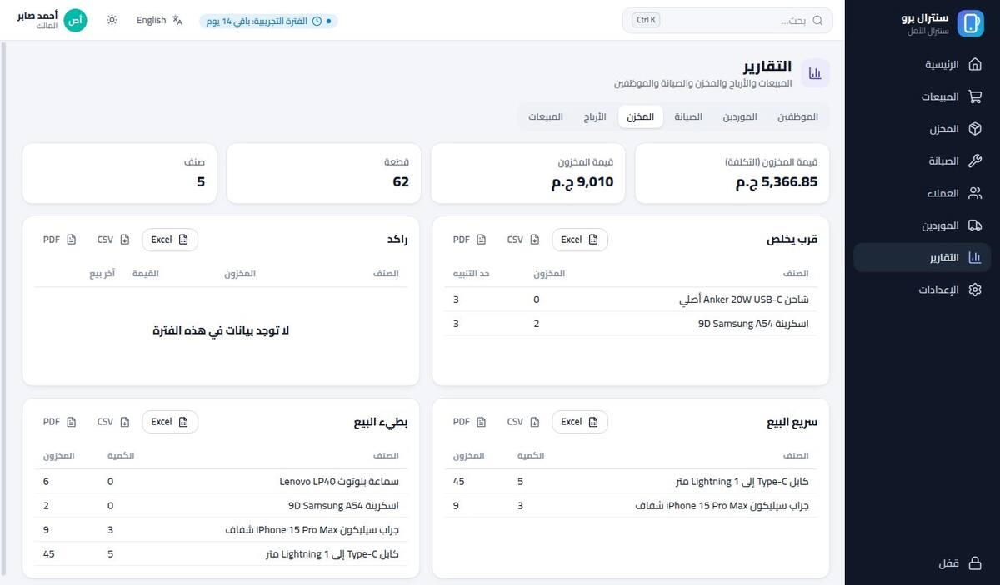
س: عندي الأصناف في ملف Excel — أدخلها إزاي مرة واحدة؟
- المخزن ← استيراد (أو حمّل النموذج الجاهز واملاه).
- اسحب الملف. البرنامج بيتعرف على الأعمدة لوحده (الاسم، السعر، الكمية، الباركود).
- بيوريك الصفوف اللي فيها مشاكل قبل ما يضيف حاجة، وبعدين استيراد.
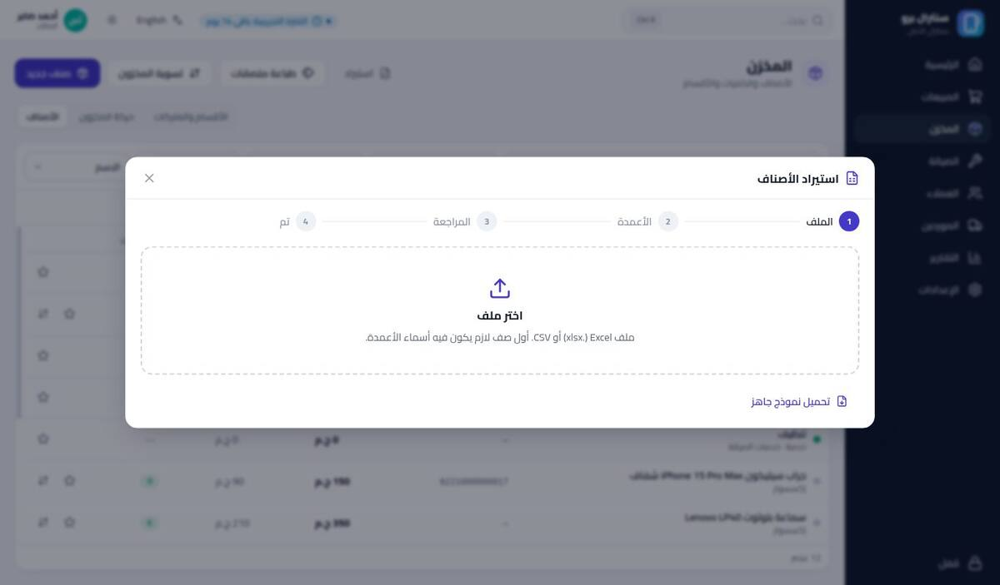
ونفس الطريقة لاستيراد العملاء. ولو حبيت تغيّر أسعار كل الأصناف: عدّل العمود في الملف واستورده تاني بخيار «تحديث».
س: إزاي أطبع ملصقات باركود وسعر؟
المخزن ← طباعة ملصقات ← اختار الأصناف والعدد ← طباعة. لو الصنف معندوش باركود، اعمله «توليد» من شاشة الصنف.
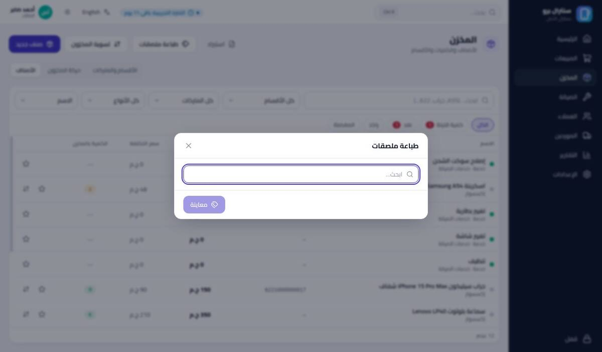
الصيانة
من الاستلام لحد التسليم
س: إزاي أستلم موبايل صيانة من عميل؟
- الصيانة ← استلام جهاز: العميل وموبايله، والجهاز والـ IMEI وقفل الشاشة.
- العطل، والسعر المتوقع، والعربون، والملحقات، وصور وتوقيع العميل.
- اطبع إيصال الاستلام فيه رقم الصيانة وكود QR.
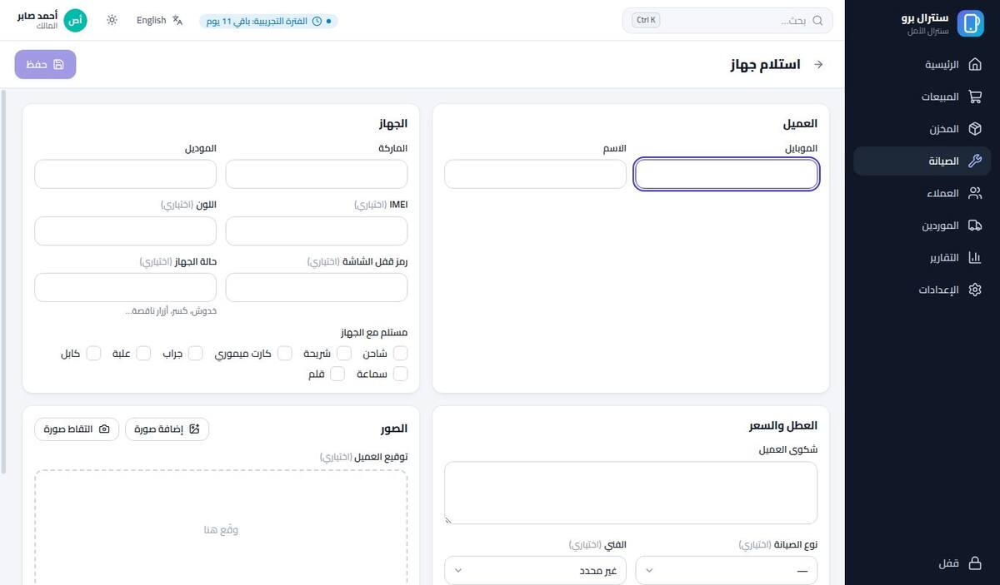
س: إزاي أتابع الأجهزة اللي في الورشة؟
- لوحة الصيانة: عمود لكل حالة، وكل كارت جهاز.
- افتح التذكرة ← نقل إلى ← الحالة الجديدة (جاري الفحص، في انتظار قطع الغيار، جاري الإصلاح، جاهز للتسليم...).
- ضيف قطع الغيار للتذكرة، وبتتخصم من المخزن.
- الأجهزة المتأخرة والجاهزة بتظهر تنبيه في الرئيسية.
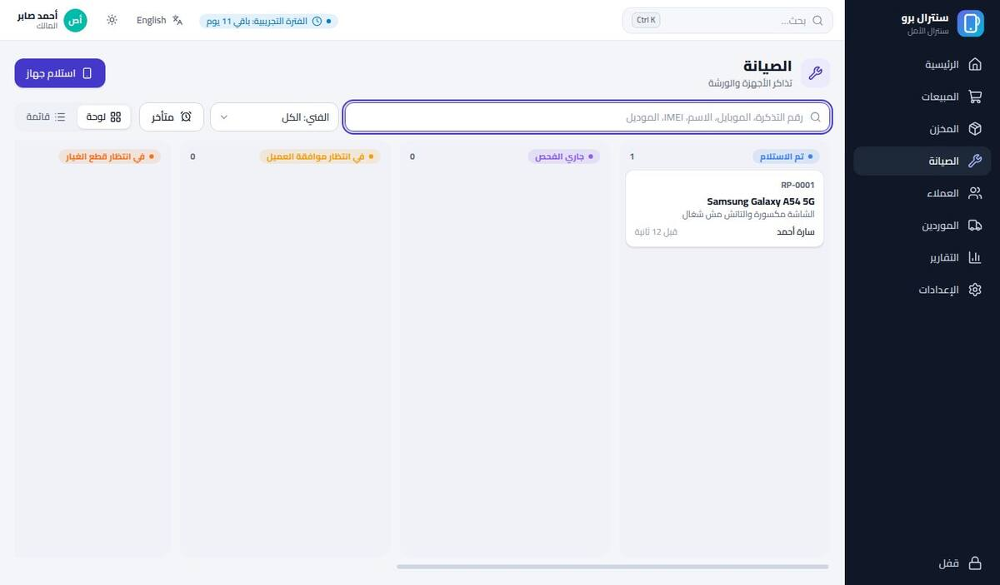
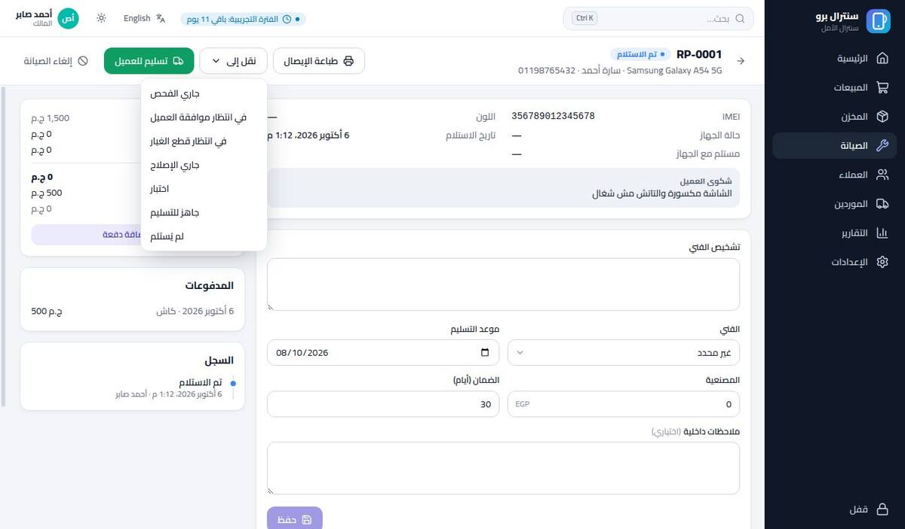
س: إزاي أسلّم الجهاز؟ ولو صاحبه ما رجعش؟
تسليم للعميل ← حصّل الباقي ← توقيع العميل. الضمان بيبدأ من يوم التسليم.
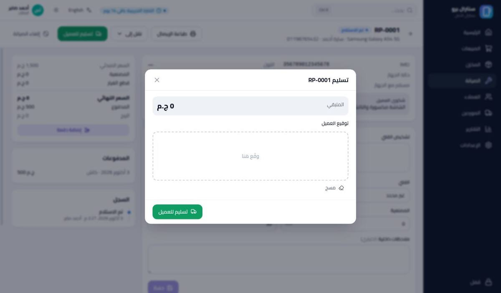
الموردين والمشتريات
البضاعة الداخلة والحسابات
س: إزاي أسجّل بضاعة اشتريتها وأعرف عليّا كام للمورد؟
- الموردين ← فاتورة شراء ← المورد والأصناف والكميات والأسعار.
- تم استلام البضاعة ← المخزون بيزيد والتكلفة بتتحدث.
- اكتب اللي دفعته، والباقي بيتسجل على حسابك عند المورد.
- دفع للمورد بعدين: كاش أو تحويل.
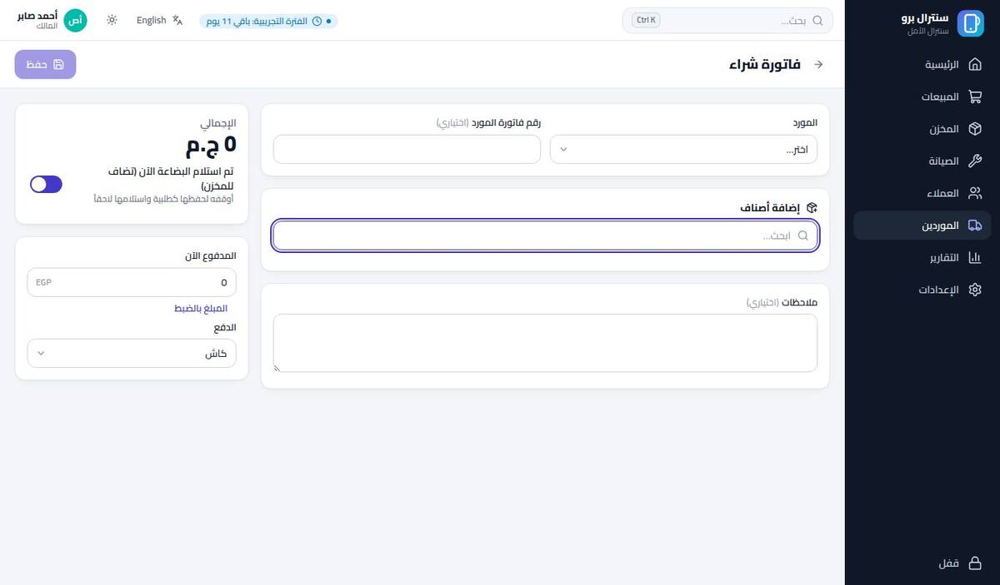
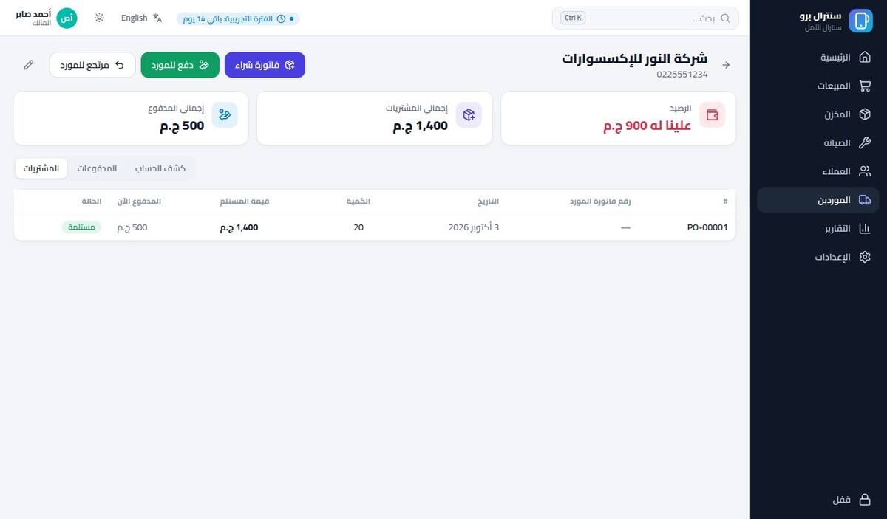
التقارير والبحث
مكسبك، وأي حاجة في ثانية
س: إزاي أعرف كسبت كام النهارده أو الشهر ده؟
التقارير ← اختار الفترة (النهارده، الأسبوع، الشهر، أو من تاريخ لتاريخ):
- المبيعات: صافي البيع، وبكل طريقة دفع، وبالقسم، والأكتر مبيعاً.
- الأرباح: ربح الأصناف والصيانة والخدمات بعد المرتجع.
- الموظفين والموردين والصيانة.
- كل جدول ليه أزرار Excel وCSV وPDF.
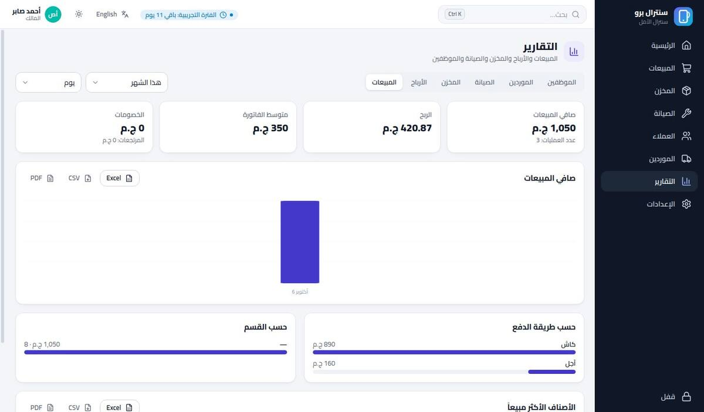
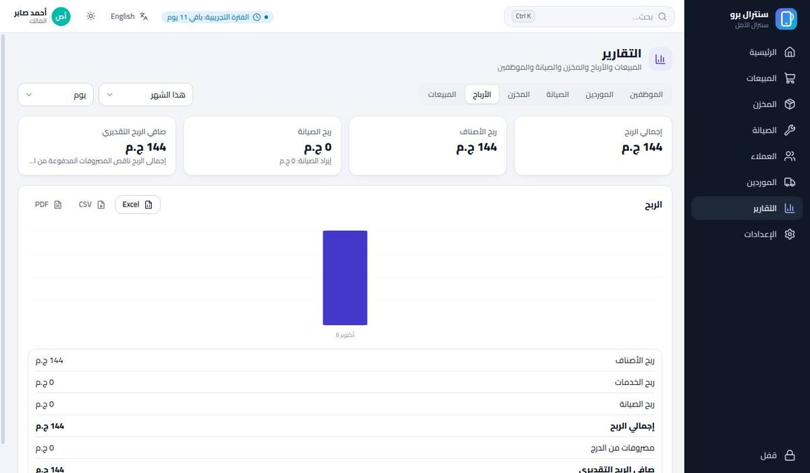
س: إزاي ألاقي أي حاجة بسرعة؟
اضغط Ctrl+K من أي شاشة، واكتب صنف أو عميل أو موبايل أو رقم فاتورة أو رقم صيانة أو IMEI. وتقدر تمسح كود QR اللي على الإيصال أو التذكرة.
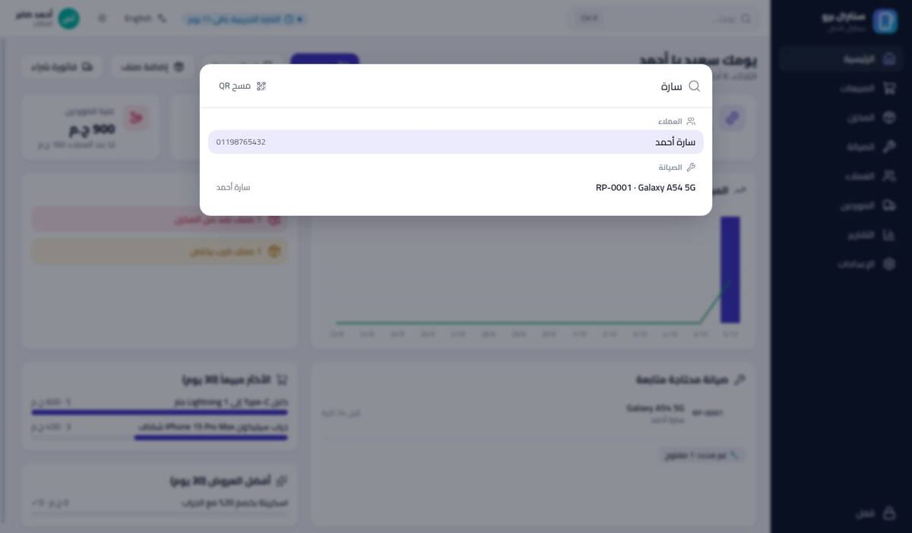
الإدارة والأمان
الموظفين، الإعدادات، الحماية، والاشتراك
س: إزاي أضيف موظف وأحدد هو يقدر يعمل إيه؟
- الإعدادات ← المستخدمين ← مستخدم جديد: الاسم واسم المستخدم والدور وكلمة المرور والـ PIN.
- الأدوار والصلاحيات: حدد كل دور يعمل إيه (خصم لحد كام، يشوف التكلفة، يعمل مرتجع...).
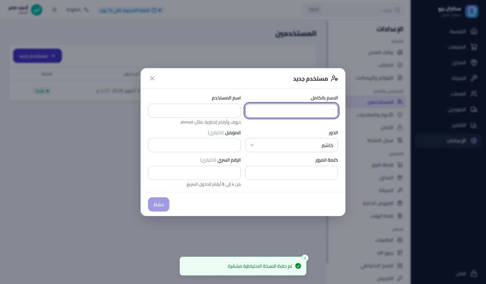
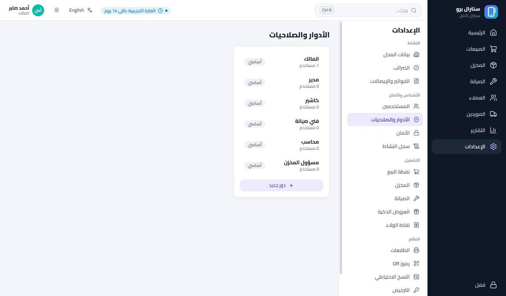
س: إزاي أعرف مين عمل إيه وإمتى؟
الإعدادات ← سجل النشاط: كل بيع وإلغاء وتعديل سعر وتسوية مخزون ودخول، باسم الموظف ووقته. محدش يقدر يمسحه.
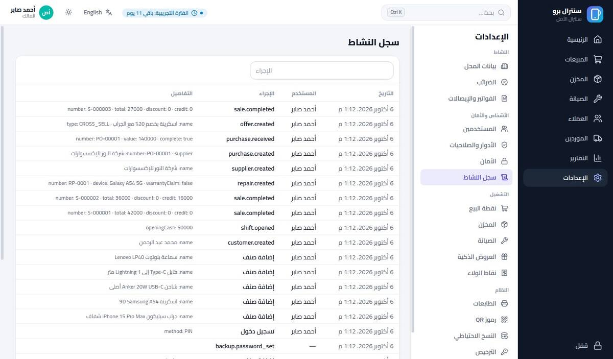
س: إزاي أظبط بيانات المحل والطابعة والإيصال؟
- بيانات المحل: الاسم والتليفون والعنوان (على الإيصال).
- نقطة البيع: طرق الدفع، والبيع الآجل، والطباعة التلقائية.
- الطابعات: طابعة الإيصال (58 أو 80 مم) والـ A4 والملصقات، و«صفحة تجربة».
- رموز QR: تظهر على إيه.
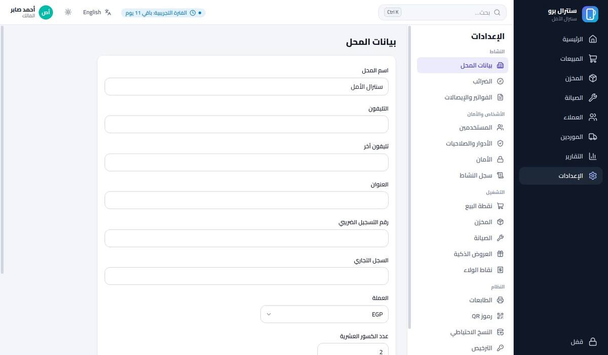
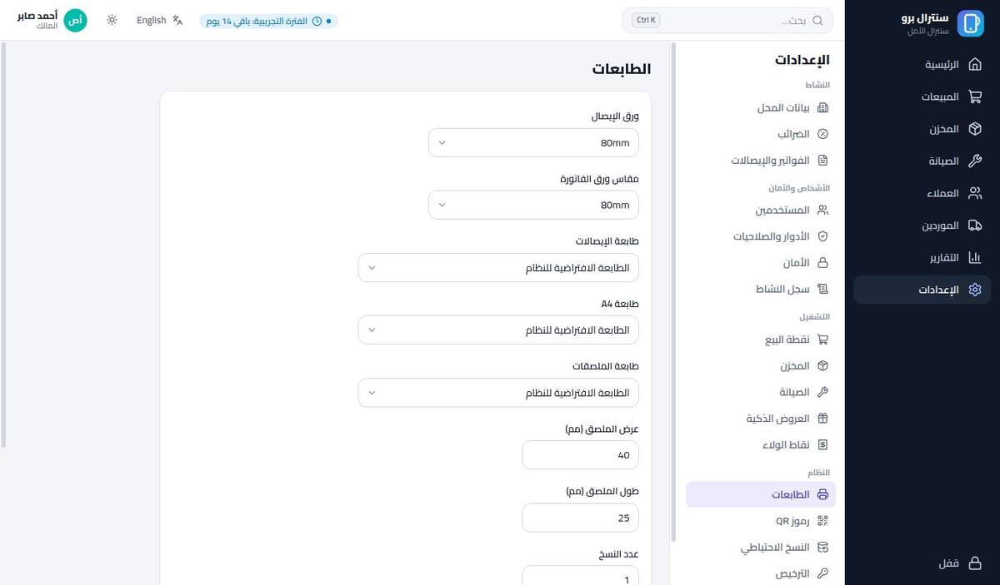
س: لو الجهاز اتسرق أو الهارد باظ، بياناتي هتروح؟
لأ، لو النسخ الاحتياطي شغال. البرنامج بياخد نسخة تلقائي كل يوم وعند القفل، وكلها مشفّرة.
- الإعدادات ← النسخ الاحتياطي ← مكان النسخة الإضافية: اختار فلاشة أو هارد خارجي.
- قبل أي حاجة مهمة: نسخة احتياطية الآن.
- جهاز جديد: ثبّت البرنامج ← أول شاشة ← استرجاع من نسخة احتياطية.
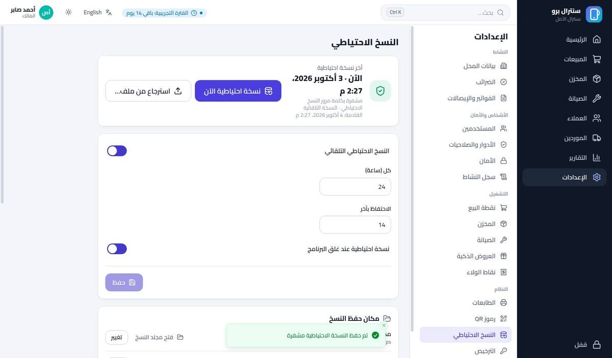
س: جرّبت البرنامج بداتا تجريبية — أبدأ الشغل الحقيقي على نضيف إزاي؟
الإعدادات ← النسخ الاحتياطي ← البدء من جديد (لصاحب المحل بس):
- بيتمسح: المبيعات والأصناف والعملاء والموردين والمشتريات والصيانة والورديات. والترقيم بيرجع من S-000001.
- بيفضل: بيانات المحل، والمستخدمين، والإعدادات، والتفعيل، والأقسام والخدمات الجاهزة.
- محتاج كلمة المرور وتكتب «امسح». وبياخد نسخة أمان قبلها، فلو غيرت رأيك استرجعها.
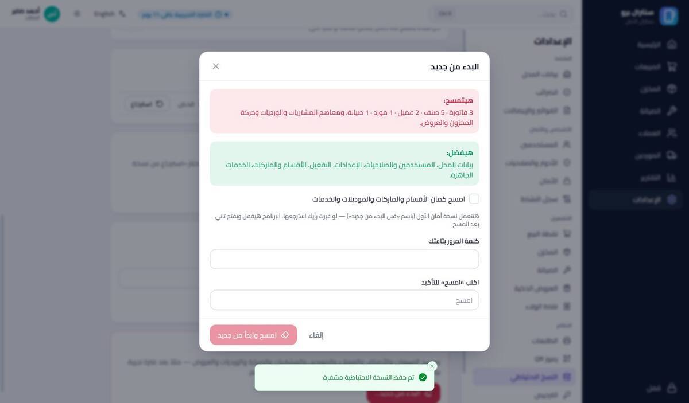
س: الاشتراك بيشتغل إزاي، وأجدده إزاي؟
باقة واحدة: 15 يوم تجربة مجاناً، وبعدها اشتراك 3 شهور بـ 500 جنيه، بكل المميزات ومن غير حد للمستخدمين.
- الأيام الباقية ظاهرة دايماً فوق، وفي آخر 7 أيام بيظهر شريط فيه السعر وكود الطلب.
- للتجديد: اضغط «نسخ الكود» وابعته للمورد ← هيبعتلك مفتاح ← «إدخال مفتاح التجديد» ← الصقه ← تفعيل.
- جدّد بدري براحتك: كل مفتاح بيتضاف على الأيام الباقية.
- بعد النهاية 3 أيام سماح، وبعدها البرنامج يقف لحد التجديد. بياناتك عمرها ما بتتمسح.
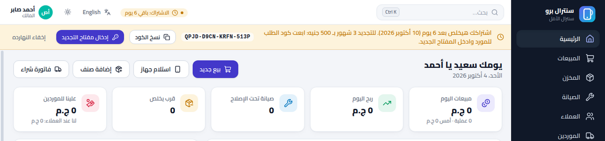
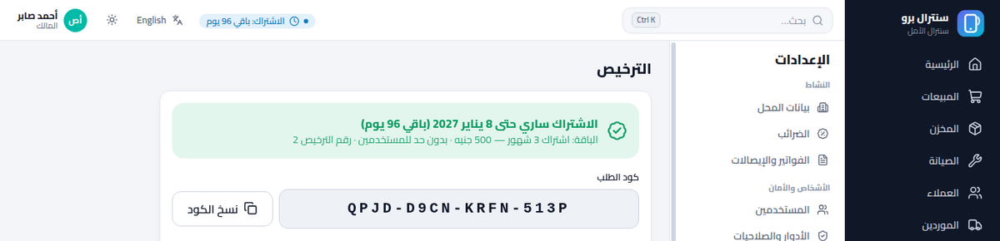
س: سايب الجهاز شوية — أحمي البرنامج إزاي؟
اضغط قفل (آخر القائمة). الشغل المفتوح بيفضل زي ما هو، والبرنامج كمان بيقفل لوحده بعد فترة من غير استخدام.
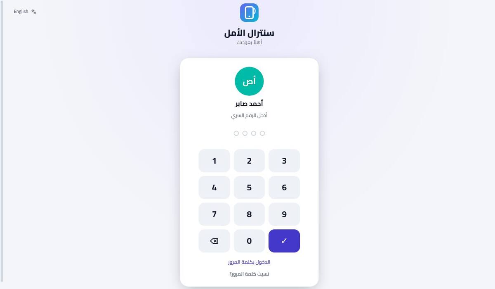
س: عندي مشكلة — أعمل إيه؟
| المشكلة | الحل |
|---|---|
| القارئ مش بيضيف الصنف | اتأكد إن الباركود متسجل على الصنف، وإن المؤشر في خانة البحث (F2). |
| «الطابعة غير متاحة» | شغّلها وتأكد إنها مختارة في الإعدادات ← الطابعات. البيع اتسجل، واطبع من سجل المبيعات. |
| رسالة خطأ | البرنامج بيقولك السبب بالظبط وتعمل إيه. اقراها كويس، ولو مش واضحة صوّرها وابعتها للمورد. |
| نسيت كلمة المرور | السؤال 3. |
| «الفلوس اللي في الدرج مش كفاية» | ادفع بطريقة تانية (تحويل)، أو جزء دلوقتي والباقي بعدين. |
| «المساحة على الجهاز خلصت» | انقل النسخ القديمة لفلاشة وامسح ملفات مش محتاجها. بياناتك سليمة. |
كل شاشة وكل زرار
كل شاشات البرنامج بالترتيب، وتحت كل صورة جدول: الزرار أو الخانة زي ما هي مكتوبة على الشاشة، وبتعمل إيه بالظبط.
الشريط اللي فوق والقائمة الجانبية
بتفتحها من: ظاهرين في كل الشاشات
القائمة على اليمين بتنقلك بين أقسام البرنامج، والشريط اللي فوق فيه البحث والحساب والتنبيهات.
| الزرار / الخانة | بيعمل إيه بالظبط |
|---|---|
| «الرئيسية» / «المبيعات» / «المخزن» / «الصيانة» / «العملاء» / «الموردين» / «التقارير» / «الإعدادات» | كل واحد بيفتح القسم بتاعه. الموظف بيشوف بس الأقسام اللي ليه صلاحية عليها. |
| «قفل» (تحت القائمة) | بيقفل الشاشة فوراً من غير ما يقفل الشغل. للرجوع: الرقم السري أو كلمة المرور. |
| «بحث…» Ctrl+K | بحث واحد في كل حاجة: صنف، عميل، موبايل، رقم تذكرة صيانة، رقم إيصال. اضغط على النتيجة يفتحها. |
| شارة الترخيص (مثلاً «الفترة التجريبية: باقي 10 يوم») | بتوضح فاضل كام يوم في التجربة أو الاشتراك. لصاحب المحل: الضغط عليها بيفتح شاشة الترخيص. |
| «English» / «العربية» | بيغيّر لغة البرنامج فوراً. |
| أيقونة الشمس | المظهر: «فاتح» أو «داكن» أو «تلقائي» (زي ويندوز). |
| اسمك وصورتك (فوق على الشمال) | بيفتح قائمة فيها: «حسابي»، «إدارة الترخيص»، «تبديل المستخدم»، «تسجيل الخروج» (الشرح في شاشة «قائمة الحساب»). |
قائمة الحساب
بتفتحها من: اضغط على اسمك فوق
كل اللي يخص الشخص اللي داخل دلوقتي.
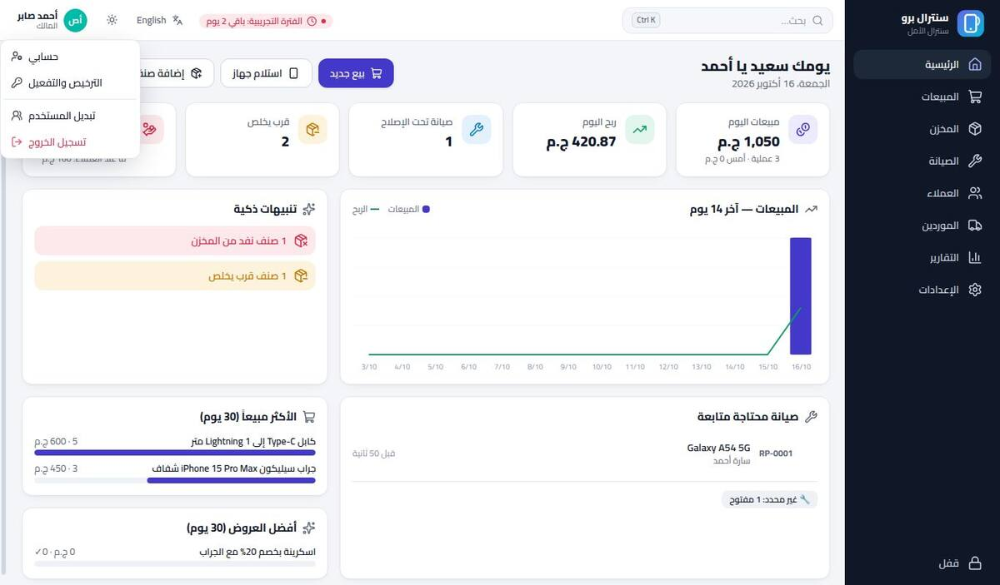
| الزرار / الخانة | بيعمل إيه بالظبط |
|---|---|
| «حسابي» | بيفتح شاشة تغيير كلمة المرور والرقم السري بتاعك. |
| «إدارة الترخيص» | بيوديك لـ الإعدادات ← الترخيص (لصاحب المحل بس). |
| «تبديل المستخدم» | بيقفل الشاشة عشان موظف تاني يدخل برقمه. الشغل بتاعك بيفضل محفوظ. |
| «تسجيل الخروج» | بيخرجك خالص ويرجعك لشاشة اختيار المستخدم. |
حسابي
بتفتحها من: اسمك ← حسابي
تغيّر كلمة المرور أو الرقم السري بتاعك إنت بس.
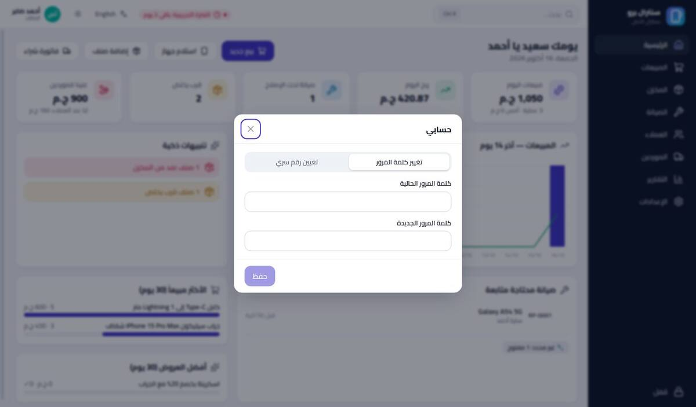
| الزرار / الخانة | بيعمل إيه بالظبط |
|---|---|
| «كلمة المرور الحالية» | لازم تكتبها عشان البرنامج يتأكد إنه إنت. |
| «كلمة المرور الجديدة» | الكلمة اللي هتدخل بيها من هنا ورايح. |
| «الرقم السري» | من 4 لـ 8 أرقام للدخول السريع من لوحة الأرقام. |
| «إزالة الرقم السري» | بيلغي الدخول بالرقم السري، فتدخل بكلمة المرور بس. |
| «حفظ» | بيحفظ التغيير. المرة الجاية تدخل بالجديد. |
شاشة الدخول
بتفتحها من: أول ما البرنامج يفتح، أو بعد القفل
كل موظف بيدخل بحسابه، فكل عملية بتتسجل باسمه.
| الزرار / الخانة | بيعمل إيه بالظبط |
|---|---|
| صورة/اسم الموظف | اختار نفسك من القائمة. |
| لوحة الأرقام | اكتب الرقم السري. لو غلط كذا مرة ورا بعض، الحساب بيتقفل دقايق (المدة من الإعدادات ← الأمان). |
| «الدخول بكلمة المرور» / «الدخول بالرقم السري» | بيبدّل بين الطريقتين. |
| «اسم المستخدم» و «كلمة المرور» ثم «دخول» | الدخول العادي. |
| «نسيت كلمة المرور؟» | الموظف: صاحب المحل يغيّرها له. صاحب المحل: بيفتح شاشة «نسيت كلمة المرور» (الصفحة الجاية). |
نسيت كلمة المرور
بتفتحها من: شاشة الدخول ← نسيت كلمة المرور؟
لصاحب المحل لو نسي كلمة المرور. بيشتغل من غير إنترنت بمفتاح من المورد.
| الزرار / الخانة | بيعمل إيه بالظبط |
|---|---|
| كود الاستعادة + «نسخ» | كود خاص بالجهاز ده. انسخه وابعته للمورد. |
| «دخّل مفتاح الاستعادة اللي هيوصلك» | الصق المفتاح اللي المورد بعتهولك. بيشتغل مرة واحدة وخلال 7 أيام. |
| «حساب صاحب المحل» | لو فيه أكتر من مالك، اختار الحساب. |
| «كلمة المرور الجديدة» / «تأكيد كلمة المرور» | الكلمة الجديدة مرتين. |
| «رقم سري جديد» | اختياري. |
| «استخدم الكلمة الجديدة للنسخ الاحتياطي كمان» | متعلّمة لوحدها: النسخ الاحتياطي بيبقى بالكلمة الجديدة، وبتتعمل نسخة جديدة بيها على طول. |
| «تغيير كلمة المرور» | بينفّذ كل ده. بعدها تدخل بالكلمة الجديدة. |
الرئيسية
بتفتحها من: القائمة ← الرئيسية
نظرة سريعة على يومك، والتنبيهات اللي محتاجة منك تصرف.
| الزرار / الخانة | بيعمل إيه بالظبط |
|---|---|
| «بيع جديد» | بيفتح نقطة البيع. |
| «استلام جهاز» | بيفتح تذكرة صيانة جديدة. |
| «إضافة صنف» | بيفتح شاشة صنف جديد. |
| «فاتورة شراء» | بيفتح فاتورة شراء من مورد. |
| كروت الأرقام (مبيعات اليوم، ربح اليوم، صيانة، قرب يخلص، الأرصدة) | ملخص النهارده. الضغط على كارت بيفتح التفاصيل بتاعته (مثلاً «قرب يخلص» يفتح المخزن على الأصناف القليلة). |
| «المبيعات — آخر 14 يوم» | رسم المبيعات يوم بيوم. |
| «تنبيهات ذكية» | حاجات محتاجة تصرف: أصناف نفدت أو قربت تخلص، أجهزة صيانة متأخرة أو جاهزة للتسليم، أصناف راكدة، فرق في درج وردية. اضغط على التنبيه يوديك للمكان. |
| «صيانة محتاجة متابعة» | الأجهزة المتأخرة أو الجاهزة ولسه ما اتسلمتش. |
| «الأكثر مبيعاً (30 يوم)» / «أفضل العروض (30 يوم)» | أكتر الأصناف بيعاً وأكتر العروض نجاحاً في آخر شهر. |
نقطة البيع: الشاشة الأساسية
بتفتحها من: القائمة ← المبيعات
هنا بتبيع. الأصناف على اليمين، والسلة والإجمالي على الشمال.
| الزرار / الخانة | بيعمل إيه بالظبط |
|---|---|
| «امسح الباركود أو ابحث عن صنف… (F2)» | امسح بالقارئ أو اكتب اسم/باركود/موديل. Enter بيضيف أول نتيجة للسلة. |
| «المفضلة» / «الأخيرة» / الأقسام | بتفلتر مربعات الأصناف: المفضلة، اللي اتباعت مؤخراً، أو قسم معيّن. |
| «صنف يدوي» | تبيع حاجة مش متسجلة: تكتب اسمها وسعرها (مش بتأثر على المخزن). |
| مربع الصنف | ضغطة = قطعة في السلة. ضغطة تانية على نفس الصنف بتزوّد العدد في نفس السطر. الرقم الصغير = الكمية في المخزن، و«نفد» يعني خلص. |
| شريط فوق: «سجل المبيعات» / «الفواتير المعلقة» / «العروض الذكية» / «الورديات» | بيفتح كل واحدة منهم. |
| «وردية مفتوحة» (الزرار الأخضر) | بيفتح ملخص الوردية وحركة الدرج وقفل الوردية. |
| «بيع سريع» / «فاتورة» | بيع سريع = إيصال بسيط. فاتورة = رقم فاتورة وبيانات العميل. |
| «اختيار عميل (F4)» | تربط البيع بعميل (للآجل والنقاط والسجل). «×» بيشيله. |
| سطر في السلة | اضغط على اسم الصنف يفتح تعديل السطر (الكمية، السعر، الخصم، رقم IMEI). «+» / «-» للكمية، وسلة المهملات تشيل السطر. |
| أيقونة % F6 | خصم على الفاتورة كلها. |
| أيقونة الإيقاف F9 | تعليق: بيحفظ السلة على جنب عشان تخدم زبون تاني، وترجعلها من «الفواتير المعلقة». |
| سلة المهملات (تحت) | بيفضّي السلة كلها بعد تأكيد. |
| «دفع» F8 | بيفتح شاشة الدفع. |
| Delete / + / - | بيشيل السطر المختار، أو يزوّد/يقلّل كميته. |
تعديل سطر في السلة
بتفتحها من: اضغط على اسم الصنف في السلة
تغيّر حاجة في سطر واحد بس.
| الزرار / الخانة | بيعمل إيه بالظبط |
|---|---|
| «الكمية» | العدد المطلوب. |
| «سعر القطعة» | تغيير السعر للبيعة دي بس. محتاج صلاحية «تعديل السعر عند البيع»، ومش بينزل تحت «أقل سعر بيع» من غير موافقة المدير. |
| «خصم على الصنف» (% أو «مبلغ») | خصم على السطر ده بس. |
| «رقم IMEI للجهاز اللي اتباع» | للموبايلات: اختار الرقم من المسجّل، أو اكتبه/امسحه، أو سيبه «— من غير رقم —». |
| «حذف» | بيشيل السطر من السلة. |
| «حفظ» | بيطبّق التعديلات. |
خصم على الفاتورة
بتفتحها من: أيقونة % أو F6
خصم واحد على إجمالي الفاتورة.
| الزرار / الخانة | بيعمل إيه بالظبط |
|---|---|
| «%» / «مبلغ» | نوع الخصم: نسبة ولا مبلغ ثابت. |
| أزرار 5% / 10% / 15% / 20% | اختيار سريع للنسبة. |
| «تطبيق» | بيطبّق الخصم. لو أكبر من الحد المسموح لدور الموظف، بيطلب موافقة المدير. |
| «مسح» | بيشيل خصم الفاتورة. |
الدفع
بتفتحها من: F8 أو زرار دفع
تختار طريقة الدفع وتكمّل البيع.
| الزرار / الخانة | بيعمل إيه بالظبط |
|---|---|
| طرق الدفع («كاش»، «فيزا»، «محفظة»، «تحويل»، «آجل») | اختار الطريقة. «آجل» محتاج عميل، وبيتسجل عليه في حسابه. |
| «المبلغ بالضبط» | بيكتب المبلغ المطلوب بالظبط. |
| أزرار المبالغ السريعة | مبالغ مقرّبة (زي 50، 100، 200) بحسب الإجمالي: اضغط على اللي العميل دفعه والبرنامج يحسب «الباقي». |
| «إضافة طريقة دفع» | تقسيم الدفع: مثلاً جزء كاش وجزء فيزا (لحد 4 طرق). |
| «استخدام النقاط» | يظهر لو العميل عنده نقاط ولاء كفاية: بيخصم قيمتها من الإجمالي. |
| «إتمام البيع» F10 / Enter | بيسجل البيع: بينقص المخزن، ويضيف الفلوس للدرج، ويطبع الإيصال لو الطباعة التلقائية شغالة. |
بعد البيع
بتفتحها من: بيظهر بعد إتمام البيع
تأكيد إن البيع اتسجل، مع الطباعة.
| الزرار / الخانة | بيعمل إيه بالظبط |
|---|---|
| «طباعة الإيصال» / «فاتورة» | بيطبع على طابعة الإيصالات. |
| «معاينة» | بيوريك شكل الإيصال على الشاشة قبل الطباعة، ومنه «حفظ PDF». |
| «صفحة A4» | فاتورة على ورقة A4 (للشركات). |
| «بيع جديد» | بيفضّي الشاشة لزبون جديد. |
اختيار عميل
بتفتحها من: F4 أو «اختيار عميل»
تربط البيع بعميل.
| الزرار / الخانة | بيعمل إيه بالظبط |
|---|---|
| خانة البحث | ابحث بالاسم أو الموبايل واضغط على العميل. |
| «عميل جديد» | تكتب «الاسم» و«الموبايل» و«حفظ»، وبيتربط بالبيع على طول. |
| «رجوع» | يرجعك لقائمة العملاء من غير ما تضيف. |
الفواتير المعلقة
بتفتحها من: شريط نقطة البيع ← الفواتير المعلقة
السلال اللي اتعلّقت بـ F9.
| الزرار / الخانة | بيعمل إيه بالظبط |
|---|---|
| «استكمال» | بيرجّع السلة دي لنقطة البيع عشان تكمّلها. |
| سلة المهملات | بيمسح الفاتورة المعلقة دي. |
الوردية: الملخص وحركة الدرج والقفل
بتفتحها من: نقطة البيع ← وردية مفتوحة
الوردية = فترة شغل الكاشير من فتح الدرج لحد قفله.
| الزرار / الخانة | بيعمل إيه بالظبط |
|---|---|
| «النقدية في الدرج» + «فتح وردية» | أول البيع: تكتب الفلوس اللي في الدرج وتفتح الوردية. |
| «ملخص الوردية» | المبيعات بكل طريقة دفع، والمرتجعات، والفلوس المفروض تبقى في الدرج. |
| «طباعة» | بيطبع ملخص الوردية. |
| «حركة الدرج»: «سحب / مصروف» أو «إيداع» | تسجّل فلوس خرجت من الدرج (مصروف، سحب) أو دخلت فيه، مع «المبلغ» و«السبب» ثم «حفظ». |
| «قفل الوردية»: «النقدية الفعلية» | تعدّ الفلوس اللي في الدرج وتكتبها. البرنامج يوريك الفرق. |
| «قفل الوردية» (الزرار الأحمر) | بيقفل الوردية. لو فيه فرق بيظهر تنبيه لصاحب المحل. |
سجل المبيعات
بتفتحها من: نقطة البيع ← سجل المبيعات
كل عمليات البيع.
| الزرار / الخانة | بيعمل إيه بالظبط |
|---|---|
| «رقم الإيصال أو الفاتورة أو اسم/موبايل العميل» | بحث في المبيعات. |
| «اليوم» / «أمس» / «هذا الأسبوع» / «هذا الشهر» / «الكل» | الفترة. |
| قائمة الحالة | «مكتملة»، «مرتجع جزئي»، «مرتجعة»، «ملغاة». |
| سطر بيع | بيفتح تفاصيل البيع (الصفحة الجاية). |
| «نقطة البيع» | يرجعك للبيع. |
تفاصيل بيع: إعادة طباعة، مرتجع، إلغاء
بتفتحها من: سجل المبيعات ← اضغط على البيع
كل تفاصيل العملية، ومنها المرتجع والإلغاء.
| الزرار / الخانة | بيعمل إيه بالظبط |
|---|---|
| «إعادة طباعة» / «فاتورة» / «صفحة A4» | بيطبع الإيصال تاني بأي شكل. |
| «مرتجع» | بيفتح المرتجع: تختار الأصناف و«كمية المرتجع». |
| «يرجع للمخزن» | متعلّمة = القطعة ترجع للمخزن. شيلها لو القطعة بايظة. |
| «رد المبلغ عن طريق» | كاش، فيزا، محفظة، تحويل، أو «رصيد للعميل» (لو البيع على عميل: المبلغ يتسجل له في حسابه بدل ما يطلع من الدرج). |
| «السبب» ثم «مرتجع» | بيسجل المرتجع. لو الإعدادات بتطلب، محتاج موافقة المدير. |
| «إلغاء العملية» | بيلغي البيع كله كأنه ما حصلش: كل الأصناف ترجع للمخزن والفلوس تتشال. لازم «سبب الإلغاء». بينفع بس لو مفيش مرتجع اتعمل عليه. |
| «رجوع» | يرجع لتفاصيل البيع من غير تنفيذ. |
الورديات
بتفتحها من: نقطة البيع ← الورديات
كل الورديات، مين فتحها وقفلها، والفرق في كل درج.
| الزرار / الخانة | بيعمل إيه بالظبط |
|---|---|
| سطر وردية | بيفتح ملخصها. |
| «تأكيد» (في ملخص وردية مقفولة) | صاحب المحل بيأكد إنه راجع الوردية والفرق. التنبيه بيختفي بعدها. |
المخزن: قائمة الأصناف
بتفتحها من: القائمة ← المخزن
كل الأصناف بأسعارها وكمياتها.
| الزرار / الخانة | بيعمل إيه بالظبط |
|---|---|
| «صنف جديد» | بيفتح شاشة إضافة صنف. |
| «تسوية المخزون» | جرد أو تالف أو مفقود لكذا صنف مرة واحدة. |
| «طباعة ملصقات» | ملصقات باركود للأصناف. |
| «استيراد» | إضافة أصناف كتير من ملف Excel. |
| «الأصناف» / «حركة المخزون» / «الأقسام والماركات» | التبويبات التلاتة للمخزن. |
| «ابحث…» | بالاسم أو الباركود أو الموديل. |
| «كل الأقسام» / «كل الماركات» / «كل الأنواع» / الترتيب | فلاتر وترتيب القائمة. |
| «الكل» / «كمية قليلة» / «نفد» / «راكد» / «المفضلة» | فلاتر سريعة. الرقم الأحمر = عدد الأصناف في الحالة دي. |
| النجمة في السطر | بتضيف الصنف لمفضلة الكاشير أو تشيله. |
| السهمين في السطر | تسوية سريعة لكمية الصنف ده. |
| سطر الصنف | بيفتح شاشة الصنف للتعديل. |
شاشة الصنف (إضافة / تعديل)
بتفتحها من: المخزن ← صنف جديد، أو اضغط على صنف
كل بيانات الصنف. شرح كل خانة بالتفصيل في سؤال «إزاي أضيف صنف جديد».
| الزرار / الخانة | بيعمل إيه بالظبط |
|---|---|
| نوع الصنف (إكسسوار، موبايل جديد، مستعمل، خدمة، قطعة غيار…) | بيحدد الخانات اللي تظهر. الخدمة ملهاش مخزون. |
| «حفظ» | بيحفظ الصنف. |
| «حذف» | بيمسح الصنف (لازم كميته تكون صفر). المبيعات القديمة بتفضل. |
| «صورة المنتج»: «اختار صورة» / «صوّر بالكاميرا» / «شيل الصورة» | صورة اختيارية بتظهر في البيع والمخزن. |
| «توليد» | بيعمل باركود داخلي للصنف لو مالوش باركود. |
| «إضافة نوع» | أنواع لنفس الصنف (ألوان، مساحات) كل نوع بسعره وكميته. |
| «تعديل الكمية» | بيغيّر الكمية (جرد) ويتسجل في حركة المخزون. |
| «إضافة أجهزة (فاتورة شراء)» | للموبايلات بالـ IMEI: يفتح فاتورة شراء عشان كل جهاز يتسجل برقمه. |
| «تفاصيل إضافية» | الضمان، الضريبة، سعر الجملة، كود الصنف، أقصى كمية، المساحة، الرام، اللون، الخامة، الملاحظات. |
| «إظهار في مفضلة الكاشير» | يظهر في «المفضلة» في البيع. |
| «متاح للبيع» | لو شلتها، الصنف ما يظهرش في البيع (من غير ما يتمسح). |
| جدول الحركة (تحت) | كل حركة حصلت على الصنف: بيع، شراء، مرتجع، تسوية. |
تسوية المخزون
بتفتحها من: المخزن ← تسوية المخزون
تصحيح الكميات.
| الزرار / الخانة | بيعمل إيه بالظبط |
|---|---|
| «السبب» | جرد (العدد الحقيقي)، تالف، مفقود، تصحيح، رصيد افتتاحي. |
| اختيار الأصناف | ابحث وضيف الأصناف واكتب لكل واحد الكمية. |
| «ملاحظة» | اختياري. |
| «حفظ» | بيغيّر الكميات ويسجل كل تغيير في حركة المخزون باسمك. |
طباعة ملصقات
بتفتحها من: المخزن ← طباعة ملصقات
ملصقات باركود (وسعر) تتلزق على البضاعة.
| الزرار / الخانة | بيعمل إيه بالظبط |
|---|---|
| اختيار الأصناف | ابحث وضيف الأصناف. |
| «عدد الملصقات» | لكل صنف. |
| «معاينة» | بيوريك الملصقات بالشكل اللي هتتطبع بيه، ومنها تطبع على طابعة الملصقات أو «حفظ PDF» (المقاس من الإعدادات ← الطابعات). |
استيراد من Excel
بتفتحها من: المخزن (أو العملاء) ← استيراد
تدخل قائمة أصناف أو عملاء مرة واحدة.
| الزرار / الخانة | بيعمل إيه بالظبط |
|---|---|
| «تحميل نموذج جاهز» | ملف Excel فاضي بالأعمدة الصح تملاه. |
| اختيار الملف | اختار ملف Excel أو CSV. |
| مطابقة الأعمدة | تقول لكل عمود في ملفك يقابله إيه في البرنامج، أو «— لا يتم استيراده —». |
| «مراجعة البيانات» | بيوريك كام صف جاهز، وكام موجود بالفعل، وكام فيه مشاكل. |
| «تحميل تقرير المشاكل» | ملف بالصفوف اللي فيها مشاكل والسبب. |
| «استيراد» (عدد الصفوف) | بينفّذ. الصفوف اللي فيها مشاكل بتتخطى. |
| «رجوع» / «إغلاق» | خطوة لورا / قفل. |
حركة المخزون
بتفتحها من: المخزن ← حركة المخزون
سجل كل قطعة دخلت أو خرجت.

| الزرار / الخانة | بيعمل إيه بالظبط |
|---|---|
| الكروت فوق | «قيمة المخزون» بالتكلفة وبسعر البيع، وعدد الأصناف والقطع. |
| فلتر النوع | بيع، شراء، مرتجع، تسوية، صيانة… |
| الجدول | التاريخ، الصنف، نوع الحركة، الكمية، الرصيد بعدها، التكلفة، السبب، المستخدم. |
الأقسام والماركات والموديلات
بتفتحها من: المخزن ← الأقسام والماركات
القوائم اللي بتختار منها في شاشة الصنف.
| الزرار / الخانة | بيعمل إيه بالظبط |
|---|---|
| «الأقسام» ← «إضافة» | قسم جديد (جرابات، شواحن…) بلون يظهر في البيع. |
| «الماركات» ← «إضافة» | ماركة موبايل جديدة. |
| «موديلات الموبايل» ← «إضافة» | موديل للماركة المختارة. «أسماء / أكواد أخرى» (زي SM-A556) بتخلي البحث يلاقيه. |
| الضغط على اسم | تعديل أو حذف. |
الصيانة: لوحة الأجهزة
بتفتحها من: القائمة ← الصيانة
كل الأجهزة اللي في الورشة.
| الزرار / الخانة | بيعمل إيه بالظبط |
|---|---|
| «استلام جهاز» | تذكرة صيانة جديدة. |
| «رقم التذكرة، الموبايل، الاسم، IMEI، الموديل» | بحث. |
| «لوحة» / «قائمة» | اللوحة: عمود لكل حالة. القائمة: جدول فيه الأجهزة القديمة والمسلّمة كمان. |
| فلتر الحالة / «الفني» / «متأخر» | فلاتر. |
| كارت الجهاز | بيفتح التذكرة. |
استلام جهاز
بتفتحها من: الصيانة ← استلام جهاز
تسجيل جهاز داخل الورشة وطباعة إيصال للعميل.
| الزرار / الخانة | بيعمل إيه بالظبط |
|---|---|
| «الموبايل» / «الاسم» | بيانات العميل. لو الرقم متسجل بيجيب العميل. |
| «فتح كتذكرة ضمان» | بيظهر لو الجهاز اتصلّح عندك وهو لسه في الضمان، فالتذكرة تتفتح كضمان. |
| «الماركة» / «الموديل» / «IMEI» / «اللون» | بيانات الجهاز. |
| «رمز قفل الشاشة» | بيتحفظ مشفّر، ومحدش يشوفه غير اللي ليه صلاحية. |
| «حالة الجهاز» | خدوش، كسر، أزرار ناقصة… عشان تحمي نفسك. |
| «شكوى العميل» / «نوع الصيانة» / «الفني» | العطل ومين هيصلّح. |
| «السعر المبدئي» / «موعد التسليم» | اللي اتفقت عليه مع العميل. |
| «عربون» / «الدفع» | فلوس مقدّم وطريقة دفعها (بتدخل الدرج). |
| «الصور»: «إضافة صورة» / «التقاط صورة» | صور الجهاز وقت الاستلام. |
| التوقيع | لو الإعدادات بتطلب توقيع العميل. |
| «حفظ» | بيفتح التذكرة برقم (RP-…) ويوديك لصفحتها، ومنها «طباعة الإيصال» للعميل. |
تذكرة الصيانة
بتفتحها من: اضغط على جهاز
كل حاجة عن الجهاز ده.
| الزرار / الخانة | بيعمل إيه بالظبط |
|---|---|
| «طباعة الإيصال» | بيطبع إيصال التذكرة تاني. |
| «نقل إلى» | بيغيّر حالة الجهاز (بيتشخص، مستني قطعة، جاهز…). كل تغيير بيتسجل في «السجل». |
| «تسليم للعميل» | بيسلّم الجهاز ويحصّل الباقي (الصفحة الجاية). |
| «إلغاء الصيانة» | بيلغي التذكرة (الصفحة الجاية). |
| سلة المهملات | بيمسح التذكرة: بيظهر بس لو مفيش فلوس اتدفعت ولا قطع مستخدمة. |
| «إظهار الرمز» | بيوريك رمز قفل الشاشة (لصاحب الصلاحية، وبيتسجل مين شافه). |
| «تشخيص الفني» / «الفني» / «موعد التسليم» / «المصنعية» / «الضمان (أيام)» / «ملاحظات داخلية» ثم «حفظ» | تعديل بيانات الشغل. |
| «إضافة قطعة» | قطعة غيار من المخزن (بتتخصم منه) أو من بره. |
| «إرجاع القطعة للمخزن» | لو القطعة ما اتركبتش. |
| «الصور» | صور قبل/بعد. |
| «إضافة دفعة» | فلوس دفعها العميل قبل التسليم. |
| ملخص الحساب | «السعر النهائي» = المصنعية + القطع، و«المدفوع» و«المتبقي». |
تسليم، دفعة، قطعة، إلغاء
بتفتحها من: من أزرار التذكرة
الشاشات الصغيرة اللي بتطلع من التذكرة.
| الزرار / الخانة | بيعمل إيه بالظبط |
|---|---|
| «تسليم للعميل»: «المبلغ المستلم» / «الدفع» | تحصّل الباقي. ممكن «آجل (على حساب العميل)». بعد التسليم الضمان بيبدأ. |
| «إضافة قطعة»: بحث في المخزن، أو «قطعة غير موجودة بالمخزن» | من المخزن: اختار وحدد «الكمية» و«السعر». من بره: اكتب «الاسم» و«سعر التكلفة». |
| «إضافة دفعة»: المبلغ وطريقة الدفع ثم «حفظ» | بتتسجل وتدخل الدرج. |
| «إلغاء الصيانة»: «إرجاع العربون للعميل» / «السبب» | لو متعلّمة، العربون بيطلع من الدرج للعميل. القطع بترجع للمخزن. |
العملاء
بتفتحها من: القائمة ← العملاء
كل عملائك بمديونياتهم ومشترياتهم.
| الزرار / الخانة | بيعمل إيه بالظبط |
|---|---|
| «عميل جديد» | إضافة عميل. |
| «استيراد» | عملاء من Excel. |
| «الاسم» / «الموبايل» | بحث. |
| «الكل» / «عليهم فلوس» | كل العملاء، أو اللي عليهم مديونية بس. |
| سطر العميل | بيفتح صفحته. |
بيانات عميل
بتفتحها من: العملاء ← عميل جديد / تعديل
| الزرار / الخانة | بيعمل إيه بالظبط |
|---|---|
| «الاسم» / «الموبايل» | أساسيين. البرنامج بينبهك لو الرقم متسجل لعميل تاني. |
| «النوع» | «عادي»، «جملة»، «مميز VIP». |
| «حد الآجل» | أقصى مديونية مسموحة. سيبه فاضي = من غير حد. |
| «العنوان» / «تصنيفات» / «ملاحظات» | اختياري. |
| «مديونية سابقة» | لو العميل عليه فلوس من قبل البرنامج. |
| «حفظ» | بيحفظ. |
صفحة العميل
بتفتحها من: العملاء ← اضغط على عميل
كل حاجة عن العميل.
| الزرار / الخانة | بيعمل إيه بالظبط |
|---|---|
| الكروت | «الرصيد» (عليه/له)، «إجمالي المشتريات»، «النقاط». |
| «تحصيل» | العميل بيدفع من مديونيته: المبلغ وطريقة الدفع. بيدخل الدرج وبينقص المديونية. |
| «تسوية الرصيد» | تصحيح يدوي: «عليه» أو «له» بمبلغ و«السبب» (من غير فلوس في الدرج). |
| «تعديل» / «حذف» | تعديل البيانات أو حذف العميل. |
| التبويبات | كشف الحساب (كل فلوس عليه وله)، المشتريات، الصيانة. |
الموردين
بتفتحها من: القائمة ← الموردين
الشركات اللي بتشتري منها.
| الزرار / الخانة | بيعمل إيه بالظبط |
|---|---|
| «فاتورة شراء» | فاتورة شراء جديدة. |
| «مورد جديد» | إضافة مورد: «الاسم»، «الشركة»، «الموبايل»، «العنوان»، «ملاحظات». |
| «رصيد سابق» | موجب = عليك له، سالب = ليك عنده. |
| «ابحث…» | بحث. |
| سطر المورد | بيفتح صفحته. |
صفحة المورد
بتفتحها من: الموردين ← اضغط على مورد
حسابك مع المورد.
| الزرار / الخانة | بيعمل إيه بالظبط |
|---|---|
| «فاتورة شراء» | فاتورة جديدة من المورد ده. |
| «دفع للمورد» | دفعت له فلوس: المبلغ وطريقة الدفع. الكاش بيطلع من الدرج. |
| «استلام فلوس» | المورد رجّعلك فلوس. |
| «مرتجع للمورد» | بترجّع بضاعة: الأصناف بتخرج من المخزن وقيمتها بتنقص من حسابه. |
| سطر فاتورة شراء | بيفتح الفاتورة: «استلام بضاعة» (للطلبيات اللي لسه ما وصلتش) أو «إلغاء الطلبية». |
| «إلغاء الدفعة» | بيلغي دفعة اتسجلت غلط. |
| التبويبات | المشتريات، المدفوعات، كشف الحساب. |
فاتورة شراء
بتفتحها من: الموردين ← فاتورة شراء
بضاعة جاية من مورد.
| الزرار / الخانة | بيعمل إيه بالظبط |
|---|---|
| «المورد» / «رقم فاتورة المورد» | مين، ورقم فاتورته. |
| إضافة الأصناف | ابحث وضيف، ولكل صنف «الكمية» و«تكلفة القطعة». |
| «أرقام IMEI» | للموبايلات: رقم في كل سطر (اختياري). |
| «تم استلام البضاعة الآن» | متعلّمة = البضاعة تدخل المخزن على طول. شيلها = طلبية تستلمها بعدين. |
| «المدفوع الآن» / «المبلغ بالضبط» / «الدفع» | اللي دفعته دلوقتي، والباقي بيتسجل عليك للمورد. |
| «ملاحظات» ثم «حفظ» | بيسجل الفاتورة ويحدّث التكلفة (متوسط). |
العروض الذكية
بتفتحها من: نقطة البيع ← العروض الذكية
خصومات واقتراحات بتزوّد البيع.
| الزرار / الخانة | بيعمل إيه بالظبط |
|---|---|
| «عرض جديد» | بيفتح شاشة العرض. |
| «عمل عرض تصفية» | يظهر لو عندك أصناف راكدة: عرض جاهز يصرّفها. |
| «العروض» / «النتائج» | القائمة، ونتائج كل عرض (ظهر كام مرة، اتقبل، الإيراد، الربح). |
| مفتاح «مفعّل» / «تعديل» / حذف | إيقاف أو تعديل أو حذف عرض. |
| شاشة العرض: النوع | «اقتراح إضافي»، «سعر باقة»، «اشتري بمبلغ واحصل»، «تصفية»، «خصم %»، «خصم مبلغ»، «خصم الكمية»، «اشتري X وخد Y مجاناً». |
| «لما السلة فيها» / «العرض على» | الصنف اللي يشغّل العرض، والصنف اللي عليه الخصم. |
| «نسبة الخصم %» / «مبلغ الخصم» / «السعر الخاص» | قيمة العرض. |
| «أقل كمية» / «إجمالي الفاتورة على الأقل» / «فقط لـ» | شروط. |
| «يبدأ» / «ينتهي» / «أقصى عدد مرات» / «الأيام» | المدة. |
| «يتطبق تلقائياً» | متعلّمة = الخصم يتحط لوحده. مش متعلّمة = يظهر اقتراح للكاشير يقبله أو «تجاهل». |
| «نشط» ثم «حفظ» | تشغيل العرض وحفظه. |
التقارير
بتفتحها من: القائمة ← التقارير
أرقام المحل.
| الزرار / الخانة | بيعمل إيه بالظبط |
|---|---|
| «المبيعات» | صافي المبيعات، عدد العمليات، متوسط الفاتورة، الخصومات، المرتجعات، حسب طريقة الدفع والقسم، والأكثر مبيعاً. |
| «الأرباح» | ربح الأصناف + ربح الصيانة − المصروفات من الدرج = صافي الربح التقديري. |
| «المخزن» | قيمة المخزون، قرب يخلص، راكد، سريع وبطيء البيع. |
| «الصيانة» | مستلم، اتسلّم، متأخر، الإيراد، والفنيين. |
| «الموردين» | علينا / لنا عند كل مورد. |
| «الموظفين» | مبيعات كل موظف، خصوماته، مرتجعاته، إلغاءاته. |
| «الفترة» / «تجميع حسب» | المدة (اليوم، الأسبوع، الشهر، الشهر اللي فات، السنة، أو من تاريخ لتاريخ)، وتجميع الأرقام باليوم أو الأسبوع أو الشهر أو السنة. |
| «Excel» / «CSV» / «PDF» | تصدير التقرير لملف. |
الإعدادات: بيانات المحل
بتفتحها من: الإعدادات ← بيانات المحل
كل صفحة إعدادات فيها زرار «حفظ» تحت. التغيير ما بيتطبقش غير لما تضغطه.
| الزرار / الخانة | بيعمل إيه بالظبط |
|---|---|
| «اسم المحل» / «التليفون» / «العنوان» / «رقم التسجيل الضريبي» / «السجل التجاري» | بيظهروا على الإيصالات والفواتير. |
| «العملة» / «عدد الكسور العشرية» | عملة البرنامج. |
| «رفع الشعار» / «إزالة» | لوجو المحل على الإيصال. |
الضرائب، الفواتير والإيصالات
بتفتحها من: الإعدادات ← الضرائب / الفواتير والإيصالات
| الزرار / الخانة | بيعمل إيه بالظبط |
|---|---|
| «تحصيل ضريبة القيمة المضافة» | تشغيل الضريبة. بعدها تظهر «نسبة الضريبة الافتراضية %» و«أسعار الأصناف تشمل الضريبة» و«اسم الضريبة على الإيصال». |
| «رسالة أسفل الإيصال» | جملة في آخر كل إيصال (مثلاً سياسة الاسترجاع). |
| «إظهار اسم الكاشير» / «إظهار الرقم الضريبي» | على الإيصال. |
نقطة البيع
بتفتحها من: الإعدادات ← نقطة البيع
| الزرار / الخانة | بيعمل إيه بالظبط |
|---|---|
| «طريقة البيع الافتراضية» | بيع سريع أو فاتورة رسمية. |
| «طريقة الدفع الافتراضية» / «طرق الدفع» | الطريقة المختارة لوحدها، والطرق اللي تظهر. |
| «لازم وردية مفتوحة للبيع» | مفيش بيع من غير فتح وردية. |
| «السماح بالبيع لو الكمية صفر» | يسمح يبيع صنف كميته صفر في البرنامج. |
| «السماح بالبيع بالآجل» | يظهر «آجل» في الدفع. |
| «طباعة الإيصال تلقائياً بعد البيع» | من غير ما تضغط طباعة. |
| «صوت عند قراءة الباركود» | صوت تأكيد. |
المخزن والصيانة
بتفتحها من: الإعدادات ← المخزن / الصيانة
| الزرار / الخانة | بيعمل إيه بالظبط |
|---|---|
| «كمية التنبيه الافتراضية» | حد «قرب يخلص» للأصناف الجديدة. |
| «الصنف يعتبر راكد بعد (يوم)» | لو ما اتباعش المدة دي. |
| «فترة الأكثر مبيعاً (يوم)» | المدة اللي بتتحسب فيها الأصناف السريعة. |
| «بادئة الباركود الداخلي» | أول أرقام الباركود اللي البرنامج بيولّده. |
| «ضمان الصيانة الافتراضي (يوم)» / «مدة الإصلاح المتوقعة (يوم)» | قيم بتتحط لوحدها في التذكرة الجديدة. |
| «طلب توقيع العميل عند الاستلام/التسليم» | شاشة توقيع. |
| «شروط الصيانة المطبوعة على الإيصال» | نص الشروط على إيصال الصيانة. |
العروض ونقاط الولاء
بتفتحها من: الإعدادات ← العروض الذكية / نقاط الولاء
| الزرار / الخانة | بيعمل إيه بالظبط |
|---|---|
| «إظهار اقتراحات ذكية عند البيع» | تشغيل الاقتراحات. «عدد الاقتراحات المعروضة» من 1 لـ 3. |
| «لا تقل نسبة الربح عن %» | العرض ما ينزلش بالربح تحت النسبة دي. |
| «أقصى خصم للتصفية %» | حد خصم عروض التصفية. |
| «التعلم من الأصناف التي تُباع معاً» | البرنامج يقترح أصناف الناس بتشتريها مع بعض. |
| «تفعيل نقاط الولاء» | بعدها: «المبلغ المطلوب لكسب نقطة»، «قيمة النقطة»، «أقل نقاط للاستبدال»، «النقاط المطلوبة لعميل VIP». |
الطابعات ورموز QR
بتفتحها من: الإعدادات ← الطابعات / رموز QR
| الزرار / الخانة | بيعمل إيه بالظبط |
|---|---|
| «ورق الإيصال» / «مقاس ورق الفاتورة» | 58 مم أو 80 مم أو A4. |
| «طابعة الإيصالات» / «طابعة A4» / «طابعة الملصقات» | كل نوع يطبع على أنهي طابعة. |
| «عرض الملصق» / «طول الملصق» | مقاس الملصق بالمم. |
| «عدد النسخ» / «طباعة شعار المحل» | |
| «طباعة تجريبية» | بيطبع ورقة تجربة عشان تتأكد إن الطابعة شغالة. |
| «تفعيل رموز QR» | كود QR على الفواتير/الإيصالات/الصيانة/الملصقات. بمسحه من «مسح QR» في البحث بيفتح العملية. |
المستخدمين
بتفتحها من: الإعدادات ← المستخدمين
الموظفين اللي بيدخلوا البرنامج.
| الزرار / الخانة | بيعمل إيه بالظبط |
|---|---|
| «مستخدم جديد» | إضافة موظف. |
| «الاسم بالكامل» / «اسم المستخدم» / «الموبايل» | بياناته. |
| «الدور» | بيحدد صلاحياته (كاشير، فني، مدير…). |
| «كلمة المرور» / «الرقم السري» | في التعديل: سيب كلمة المرور فاضية عشان تفضل زي ما هي. |
| «نشط» | شيلها = الموظف ما يقدرش يدخل (من غير ما سجله يتمسح). |
| «حفظ» | بيحفظ. |
الأدوار والصلاحيات
بتفتحها من: الإعدادات ← الأدوار والصلاحيات
كل دور = مجموعة صلاحيات.
| الزرار / الخانة | بيعمل إيه بالظبط |
|---|---|
| «دور جديد» | دور بصلاحيات تختارها. |
| «اسم الدور» | |
| «أقصى خصم بدون موافقة %» | أكتر من كده بيطلب موافقة المدير. |
| مربعات الصلاحيات | كل صلاحية لوحدها (بيع، تعديل سعر، مرتجع، شوف التكلفة…). |
| «حفظ» / «حذف» | دور المالك ما يتعدلش. |
الأمان وسجل النشاط
بتفتحها من: الإعدادات ← الأمان / سجل النشاط
| الزرار / الخانة | بيعمل إيه بالظبط |
|---|---|
| «قفل الشاشة بعد عدم النشاط (دقيقة، 0 = أبداً)» | قفل تلقائي. |
| «محاولات خاطئة قبل القفل المؤقت» / «مدة القفل المؤقت» | حماية من التخمين. |
| «المرتجع يحتاج موافقة المدير» | أي مرتجع لازم مدير يوافق عليه. |
| سجل النشاط: «الإجراء» | كل حاجة مهمة اتعملت: مين، إمتى، وإيه بالظبط. تقدر تفلتر بنوع الإجراء. |
النسخ الاحتياطي
بتفتحها من: الإعدادات ← النسخ الاحتياطي
نسخ مشفرة من بياناتك.
| الزرار / الخانة | بيعمل إيه بالظبط |
|---|---|
| «نسخة احتياطية الآن» | بياخد نسخة فوراً. |
| «استرجاع من ملف…» | تختار ملف نسخة، وتكتب «كلمة مرور النسخ الاحتياطي»، وتعلّم «فاهم إن البيانات الحالية هتتبدل»، ثم «استرجاع الآن». |
| «النسخ الاحتياطي التلقائي» / «كل (ساعة)» / «الاحتفاظ بآخر» / «نسخة احتياطية عند غلق البرنامج» | إعدادات النسخ التلقائي. |
| «مكان حفظ النسخ»: «تغيير» / «الافتراضي» / «فتح مجلد النسخ» | فين النسخ بتتحفظ. |
| «نسخة إضافية (فلاشة / هارد خارجي)»: «اختيار» / «إزالة» | نسخة تانية على فلاشة. |
| جدول النسخ: «فحص» / «استرجاع» | فحص = يتأكد إن النسخة سليمة. استرجاع = يرجّع البيانات منها. |
| «حفظ ملف النقل» | ملف واحد فيه المحل كله، للنقل لجهاز تاني. |
| «تغيير كلمة مرور النسخ الاحتياطي» | كلمة جديدة، وبيتعمل نسخة بيها على طول. |
| «البدء من جديد…» | بيمسح بيانات التجربة (مبيعات، أصناف، عملاء…) ويسيب بيانات المحل والمستخدمين. محتاج كلمة المرور وكتابة كلمة التأكيد، وبيعمل نسخة أمان الأول. |
الترخيص وهذا الجهاز
بتفتحها من: الإعدادات ← الترخيص / هذا الجهاز
| الزرار / الخانة | بيعمل إيه بالظبط |
|---|---|
| كود الطلب + «نسخ» | كود الجهاز ده: ابعته للمورد عشان يبعتلك مفتاح. |
| «الصق مفتاح التفعيل هنا» ثم «تفعيل» | بيفعّل الاشتراك. لو لسه فيه أيام، المدة الجديدة بتتضاف عليها. |
| «إدخال مفتاح التجديد» | نفس الكلام للتجديد. |
| «فتح المجلد» | بيفتح مجلد بيانات البرنامج. |
| «التحديثات» | بيوضح رقم الإصدار اللي عندك. الإصدار الجديد بيوصلك كملف تثبيت من المورد: شغّله على نفس الجهاز، وبياناتك وإعداداتك وتفعيلك بيفضلوا زي ما هم. |